import pandas as pd
import numpy as np
import matplotlib
import matplotlib.pyplot as plt
import math
import seaborn as sns
from pathlib import Path
import ast
import re
import time, random, requests
from bs4 import BeautifulSoup
from pathlib import Path
import statsmodels.api as sm
from matplotlib.colors import LinearSegmentedColormapAnalysis of Politician’s Stock Trades
COGS 108 - Final Project (An Analysis on Politician’s Stock Trades)
Project Video
https://youtu.be/EjIKrm_XvgQ?si=THHE9LhdBjIwkSeF
Permissions
Place an X in the appropriate bracket below to specify if you would like your group’s project to be made available to the public. (Note that student names will be included (but PIDs will be scraped from any groups who include their PIDs).
Names
- Tyler Hoang
- Tanner Berman
- Thanh Hoang
- David Villalobos Hornback
- Manjot Samra
Abstract
Please write one to four paragraphs that describe a very brief overview of why you did this, how you did, and the major findings and conclusions.
This question is important because it touches on ethics, public trust, and financial fairness. If lawmakers are consistently profiting from trades tied to their committee work, it raises concerns about insider information and accountability. Understanding this pattern could help the public and policymakers evaluate whether current rules, like the STOCK Act, are working. Because our Congressmen are required to publish all major stock trades and other financial investments, we performed this project by using this data. Then, we determined what sectors a politician was associated with by their Committee assignments - if a politician is part of the House Committee on Energy and Commerce, for example, they probably have relationships with the energy sector’s lobbyists, and write legislation related to energy. So, based on the Congressman’s committee assignments, and the company associated with the stock, we can determine whether a trade is related to the legislative work that a Congressman performs, and then see if a correlation exists. However, our major finding was that there is no statistically significant correlation between trade relatedness and return on investment, but rather that several other variables play a role in predicting the performance of a stock trade - the Chamber (House vs. Senate), political party affiliation, and lastly the sector that the investment was made in.
Research Question
Our research question: Do American Congressmen in industry or commerce-related committees trading stocks related to their sector perform better than when investing in unrelated sectors?
Details:
Independent Variable: Whether the stock is related or unrelated to the politicians committee focus (Related vs. Unrelated Sector). We may also investigate patterns related to sector, state, commitee, or party
Dependent Variable: Performance (ROI) of stock after a set period of time (e.g., weekly, monthly, yearly)
Population: House and Senate members of key committees
Control Variables: Market Return, sector return overall, stock volatility, trade size
Timeframe: 3 Years to current date
Background and Prior Work
Background Research & Prior Work In the United States, lawmakers have long faced public criticism for alleged insider trading. Insider trading happens when an individual purchases or sells an asset that they own based on information that is not known to the public, often because they have access to the company’s financial information or even plans. For U.S. lawmakers, this means that they have non-public information because of legislative work or committee briefings that they are a part of. They govern laws that may affect an entire industry or a subsector of that industry. To address the issues of insider trading, Congress passed the Stop Trading on Congressional Knowledge Act, also known as the STOCK Act, on April 3, 2012, which requires U.S. Lawmakers to announce/show trades (buying/selling) exceeding $1,000 public information within 30–45 days of the transaction.1 Despite this, it is still debated whether this act really stopped insider trading, or does it allow it to happen in plain sight. This critique encourages the debate whether the STOCK Act has actively/effectively deterred insider trading and further encourages our research question to determine if politicians are getting better ROI’s on stocks related to their sectors potentially due to insider knowledge of their sector.
Studies have analyzed stock and trade data to investigate whether members of Congress consistently do better or outperform the market with their trades. Ziobrowski et al. (2011) analyzed over 16,000 transactions made by House Members between 1985 and 2001, finding that if you copied their trade portfolio, you would have outperformed the market by 6.6%.2 But more recent research by Belmont et al. (2022), which looked at all trades from January 2012 to December 2020 (post-STOCK Act) made by U.S. lawmakers, found no evidence of lawmakers having a trading advantage: buy trades underperformed the market by 26 basis points and sell trades by 11 basis points over a period of six months.3 Meanwhile, Quiver Quantitative’s “Pelosi Tracker” shows that mimicking Nancy Pelosi’s disclosed trades since May 16, 2014, would have produced returns of around 720%, compared to approximately 230% for the S&P 500 over the same period.4 However, these results don’t account for trading costs, taxes, or delays in disclosure. These differences show how results can vary depending on time period, methodology, and individual lawmakers. Our project builds on this prior work by asking a more specific question, wether lawmakers perform better when trading stocks from sectors tied to their committee assignments.
An article by Jack Caporal from The Motley Fool looks at congressional stock trading patterns between 2021 and 2024 and shows that more than 100 members of Congress made around 10,000 stock trades per year.5 In 2024 alone, the average estimated returns were 31.1% for Democrats and 26.1% for Republicans. The most commonly traded companies were Microsoft, Apple, Nvidia, JPMorgan Chase, and Palo Alto Networks. Many of these trades happened around the same time as major legislation, like the CHIPS and Science Act or the TikTok divestment bill. This raises questions about whether members of Congress may be trading from the information they have access to through their legislative work and connections. The article also highlights that members often trade stocks in industries related to the committees they serve on, like defense, health, and energy. This supports our project’s focus beucase it shows us whether politicians see stronger returns when they trade stocks related to the sectors they oversee. It also shows that there’s already public interest and growing concern about whether these trades are ethical.
A study co-authored by Dinesh Hasija, PhD, who is an assitant professor of management at Augusta University, in the Hull College of Business, looked at how the stock market reacts to trades made by U.S Senators.6 The study found that investors tend to believe that members of Cngress have insider knowledge and influence over certain compainies, especially when they oversee those industries. Because of this, the market react positively when the stock trades of those members in congress are made public. And the effect is even stronger when the firm is tied to members of U.S. Senate through lobbying-sponsored legislation and politcal action committee contributions. This finding shows that the trades made by lawmakers or the members of Congress with direct oversight roles lead to bigger market reactions, which supporst our project’s hypothesis: that comitte assignments might play a role in stock performance.
Lastly, another study by Nantiya Udomworarat, a researcher from the number one research university in Thailand and was published by the university, Chulalongkorn University in 2005.7 The conducted research project aimed to discover “the relationship between politics and stock returns in Stock Exchange of Thailand (SET).” It was concluded that political connections typically don’t lead to greater statistically significant returns in the market. However, in support of out hypothesis, they found that “stock returns increased 43.35% in 2003 when the firms were connected in someway to the politcal cabinet. Additionally, they found that the returns of firms who were connected to a cabinet and firms connected to politicians perform better than non-connected firms. They author also found that both”abnormal returns of connected firms and those of non-connected firms” tend to behave similarly regardless of the situation. Some limitations of the source includes where it was conducted (in Thailand), its age, and the fact that it concluded there was not typically a difference in returns based on politcal cabinet. However, we believe that the other findings may support our hypothesis, even in the U.S, and we aim to discover if this can be applied to different nations.
^ Adam Hayes (April 16, 2025) STOCK Act: Meaning, Overview, Criticisms. Investopedia. https://www.investopedia.com/terms/s/stop-trading-on-congressional-knowledge-act.asp
^ Ziobrowski, A. J., Boyd, J. W., Cheng, P., & Ziobrowski, B. J. (April, 2011) Abnormal Returns from the Common Stock Investments of Members of the U.S. House of Representatives. Lindenwood University. https://digitalcommons.lindenwood.edu/faculty-research-papers/240/
^ Belmont, A., Hutton, I., & Jacobsen, R. (November 17, 2021,) Do U.S. Lawmakers Have an Edge in Stock Trading? Science Direct. https://www.sciencedirect.com/science/article/abs/pii/S0047272722000044
^ Pelosi Tracker – Quiver Quantitative. Quiver Quantitative. https://www.quiverquant.com/congresstrading/politician/Nancy%20Pelosi-P000197
^ Jack Caporal (Jan 31, 2025) Congressional Stock Trading: Who Trades and Makes the Most. The Motley Fool. https://www.fool.com/research/congressional-stock-trading-who-trades-and-makes-the-most/
^ Kevin Faigle & Dinesh Hasija (Oct 18, 2022). New Study Shows Congressional Stock Purchases May Impact Stock Market Reactions. Jagwire. https://jagwire.augusta.edu/new-study-shows-congressional-stock-purchases-may-impact-stock-market-reactions/
^ Nantiya Udomworarat (2005) Politics and Stock Returns: Evidence from Thailand. Chulalongkorn University https://doi.org/10.14457/cu.the.2005.1604
Hypothesis
Hypothesis: We predict that trades made by politicians in sectors related to their committees will show a moderate positive correlation with three-month return on investment. Specifically, we expect these related trades to outperform unrelated trades by at least 10 percentage points in three-month ROI on average.
Hypothesis Clarification: ROI here means how much the stock’s price changes three months after it was bought, showing whether it gained or lost value.
Hypothesis Reasoning: Politicians who oversee a sector might have greater knowledge or insider information about that industry. We believe this could help them make stock decisions that are more profitable within that sector, compared to other sectors. However, it is more likely that greater knowledge leads to better trades, and it is hard to draw conclusions about the true cause of better performing investment returns.
Data
Data overview
Dataset 1 (Capitol Trades) Description:
- The dataset shows stock trades disclosed by members of the U.S. Congress. Some of the important variables are the ticker symbol/company shorthand (Ticker), the type of asset (ex. Crypto, stock, bond, etc.) (TickerType), company name (Company), transaction type (Transaction), trade date (Traded), estimated trade value (Trade_Size_USD) but this last one may not be useful for us. Some of the important variables considering the politician are the politician’s name (Name), politician’s chamber (Chamber), and the politician’s party affiliation (Party). The (excess_return) column will be very helpful to us because it is the calculated performance of the stock relative to the market after the trade, which is the key metric for determining how profitable it was; it will serve as a proxy for determining a measurement of a Congressperson’s success in the market. Here are some important wrangle/cleaning/preprocess considerations: Tickers with special characters (ex: BRK/B, need to be dealt with), Ticker and Sector matching (we have good progress on this), Congressperson and Sector matching, removing unnecessary variables, cleaning up blank values, and identifying trades related to a Congressman’s sector.
Dataset 2 (Quiver Quant) Description:
- This dataset contains information about stock trades by US Congress members. Some key variables are the names of the politicians, (politician_name), and their party affiliation, (politican_family), and the date when the trades happened, (traded, what the actual company being traded is, (traded_issuer_name), the ticker symbol, (traded_issuer_ticker), the price of the share price at the trade time, (price), transaction type, buy or sell, (type). This dataset may be used to proxy for success in investment based on the return on investment. We need to calculate ROI by matching buy transactions and sell transactions. We also need to remove rows that have missing data, dealing with tickers with special characters, removing unused variables, and identifying trade related to Congressman’s sector.
Combining Datasets:
- If we choose to, we will combine datasets by only including important identifying information in each entry. Namely, we will include the ticker name, the ROI, the sector that the stock’s company belongs to, the Congressman, the sector that the Congressman’s committee belongs to, the date of the trade, as well as the Congressman’s party affiliation. We will identify identical entries (same politician, stock, and date traded), and only take one of these values in our final result. However, we will probably not be combining datasets, as we plan to use one dataset for EDA, and the other for the full-on analysis.
Dataset #1 (Capitol Trades)
data = pd.read_excel("FINAL_PROJECT_WORK/FINAL_dataset.xlsx")
data.head()| Ticker | TickerType | Company | Traded | Transaction | Trade_Size_USD | Status | Subholding | Description | Name | BioGuideID | Filed | Party | District | Chamber | Comments | Quiver_Upload_Time | excess_return | State | last_modified | |
|---|---|---|---|---|---|---|---|---|---|---|---|---|---|---|---|---|---|---|---|---|
| 0 | AXP | ST | AMERICAN EXPRESS COMPANY COMMON STOCK | 2025-05-05 | Purchase | $1,001 - $15,000 | NEW | MARJORIE IRA | NaN | Marjorie Taylor Greene | G000596 | 2025-05-06 | R | GA14 | House | NaN | 2025-05-07 | 2.203268 | Georgia | 2025-05-07 |
| 1 | GILD | ST | GILEAD SCIENCES, INC. - COMMON STOCK | 2025-05-05 | Purchase | $1,001 - $15,000 | NEW | NaN | NaN | Marjorie Taylor Greene | G000596 | 2025-05-06 | R | GA14 | House | NaN | 2025-05-07 | -5.866157 | Georgia | 2025-05-07 |
| 2 | CMI | ST | CUMMINS INC. COMMON STOCK | 2025-05-05 | Purchase | $1,001 - $15,000 | NEW | MARJORIE IRA | NaN | Marjorie Taylor Greene | G000596 | 2025-05-06 | R | GA14 | House | NaN | 2025-05-07 | 1.331400 | Georgia | 2025-05-07 |
| 3 | AMAT | ST | APPLIED MATERIALS, INC. - COMMON STOCK | 2025-05-05 | Purchase | $1,001 - $15,000 | NEW | MARJORIE IRA | NaN | Marjorie Taylor Greene | G000596 | 2025-05-06 | R | GA14 | House | NaN | 2025-05-07 | 0.519373 | Georgia | 2025-05-07 |
| 4 | GILD | ST | GILEAD SCIENCES, INC. - COMMON STOCK | 2025-05-05 | Purchase | $1,001 - $15,000 | NEW | MARJORIE IRA | NaN | Marjorie Taylor Greene | G000596 | 2025-05-06 | R | GA14 | House | NaN | 2025-05-07 | -5.866157 | Georgia | 2025-05-07 |
Let’s drop unnecessary columns
# COLUMNS REMOVE: Company, Filed, Transaction (KEEP PURCHASE), Status, Subholding,
# Description, BioGuideID, Comments, Quiver_Upload_Time, last_modified
# COLUMNS NEED TO ADD: Sector (Stock), Politician Sector, Related
# RESULTING COLUMNS: Ticker, TickerType, Traded, Transaction, Trade_Size_USD, Name,
# Party, District, Chamber, excess_return, State, Sector (Stock), Politician Sector, Related
# REMOVING UNNEEDED COLUMNS
#(TANNER WORK 6/10 2AM) ---
# Filter to only 'Purchase' for Transaction
purchase_only_df = data[data['Transaction'] == 'Purchase'].copy()
# Dropping unnecessary columns
cols_to_drop = [
'Company', 'Filed', 'Status', 'Subholding',
'Description', 'BioGuideID', 'Comments',
'Quiver_Upload_Time', 'last_modified'
]
purchase_only_df.drop(columns=cols_to_drop, inplace=True)
purchase_only_df.head()
#(TANNER WORK 6/10 2AM) --->| Ticker | TickerType | Traded | Transaction | Trade_Size_USD | Name | Party | District | Chamber | excess_return | State | |
|---|---|---|---|---|---|---|---|---|---|---|---|
| 0 | AXP | ST | 2025-05-05 | Purchase | $1,001 - $15,000 | Marjorie Taylor Greene | R | GA14 | House | 2.203268 | Georgia |
| 1 | GILD | ST | 2025-05-05 | Purchase | $1,001 - $15,000 | Marjorie Taylor Greene | R | GA14 | House | -5.866157 | Georgia |
| 2 | CMI | ST | 2025-05-05 | Purchase | $1,001 - $15,000 | Marjorie Taylor Greene | R | GA14 | House | 1.331400 | Georgia |
| 3 | AMAT | ST | 2025-05-05 | Purchase | $1,001 - $15,000 | Marjorie Taylor Greene | R | GA14 | House | 0.519373 | Georgia |
| 4 | GILD | ST | 2025-05-05 | Purchase | $1,001 - $15,000 | Marjorie Taylor Greene | R | GA14 | House | -5.866157 | Georgia |
There are some incorrectly inputted tickers in our dataset, let’s filter them out. Then, since we’re primarily concerned with return on investment, we will use only the purchase transactions, as one initial purchase may be sold off into multiple different parts.
# TICKER CLEANING BRAINSTORMING
# periods at end are not legal, slashes not legal, % not legal, cut all numbers (checked manually), cut carrots
#(TANNER WORK 6/10 2AM) ---
#FIRST ROUND OF TICKER CLEANING (REMOVE NUMBERS, %, /, and ^)
# Function to validate tickers
def is_valid_ticker(ticker):
if any(char in ticker for char in ['%', '/', '^']):
return False
if any(char.isdigit() for char in ticker):
return False
return True
unique_tickers = sorted(purchase_only_df['Ticker'].dropna().unique().tolist())
# Create valid ticker list
valid_tickers = [ticker for ticker in unique_tickers if is_valid_ticker(ticker)]
# Filter dataframe to only keep valid tickers
purchase_only_df = purchase_only_df[purchase_only_df["Ticker"].isin(valid_tickers)].copy()
#(TANNER WORK 6/10 2AM) --- purchase_only_df| Ticker | TickerType | Traded | Transaction | Trade_Size_USD | Name | Party | District | Chamber | excess_return | State | |
|---|---|---|---|---|---|---|---|---|---|---|---|
| 0 | AXP | ST | 2025-05-05 | Purchase | $1,001 - $15,000 | Marjorie Taylor Greene | R | GA14 | House | 2.203268 | Georgia |
| 1 | GILD | ST | 2025-05-05 | Purchase | $1,001 - $15,000 | Marjorie Taylor Greene | R | GA14 | House | -5.866157 | Georgia |
| 2 | CMI | ST | 2025-05-05 | Purchase | $1,001 - $15,000 | Marjorie Taylor Greene | R | GA14 | House | 1.331400 | Georgia |
| 3 | AMAT | ST | 2025-05-05 | Purchase | $1,001 - $15,000 | Marjorie Taylor Greene | R | GA14 | House | 0.519373 | Georgia |
| 4 | GILD | ST | 2025-05-05 | Purchase | $1,001 - $15,000 | Marjorie Taylor Greene | R | GA14 | House | -5.866157 | Georgia |
| ... | ... | ... | ... | ... | ... | ... | ... | ... | ... | ... | ... |
| 51283 | ABBV | NaN | 2013-01-02 | Purchase | $1,001 - $15,000 | Ms. Tammy Duckworth | D | IL08 | House | 137.415346 | Illinois |
| 51285 | DD | Stock | 2012-12-17 | Purchase | $1,001 - $15,000 | Carper, Thomas R. | D | NaN | Senate | -343.822825 | Delaware |
| 51287 | DD | Stock | 2012-09-13 | Purchase | $1,001 - $15,000 | Carper, Thomas R. | D | NaN | Senate | -342.945845 | Delaware |
| 51289 | CAT | NaN | 2012-07-26 | Purchase | $1,001 - $15,000 | Ms. Tammy Duckworth | D | IL08 | House | -25.552185 | Illinois |
| 51291 | KSU | NaN | 2012-06-06 | Purchase | $1,001 - $15,000 | Mr. Alan S. Lowenthal | D | CA47 | House | 89.238230 | California |
25276 rows × 11 columns
Then, let’s associate each stock ticker with the sector that its company is a part of, based on various stock exchange datasets.
tickers = purchase_only_df['Ticker'].dropna().unique().tolist()len(tickers)3074temp = purchase_only_df.copy(deep=True)purchase_only_df = temp.copy(deep=True)
# Files to search, in order
no_prefix_files = {"usa.csv", "us-otc.csv"}
# TODO: FIX PATH LATER
prefix = "TICKERS/"
purchase_only_df["Sector"] = None
purchase_only_df["Ticker"] = purchase_only_df["Ticker"].astype(str)
# Track which tickers are still unmatched
unmatched_mask = purchase_only_df["Sector"].isna()
import pandas as pd
# List of datasets and which ones have prefixes
csv_files = [
"usa.csv", # no prefix
"us-otc.csv", # no prefix
"uk.csv", # has prefix
"japan.csv", # has prefix
"canada.csv", # has prefix
"hongkong.csv", # has prefix
"china.csv", # has prefix
"australia.csv", # has prefix
"india.csv", # has prefix
"germany.csv", # has prefix
"southkorea.csv",# has prefix
"taiwan.csv" # has prefix
]
# Files that do NOT have exchange prefixes in the ticker symbol
no_prefix_files = {"usa.csv", "us-otc.csv"}
# Keep track of tickers still needing matches
unmatched_mask = purchase_only_df["Sector"].isna()
# Process each dataset
for file in csv_files:
try:
df = pd.read_csv(prefix+file)
except Exception as e:
print(f"Error reading {file}: {e}")
continue
df["Symbol"] = df["Symbol"].astype(str)
# If this file uses prefixes, extract the base ticker
if file not in no_prefix_files:
# Assume format like "LSE:BP" or "JPX:7203"
df["Clean Ticker"] = df["Symbol"].str.split(":").str[-1]
ticker_col = "Clean Ticker"
else:
ticker_col = "Symbol"
# Create mapping from cleaned ticker to sector
ticker_to_sector = df.set_index(ticker_col)["Sector"].to_dict()
# Apply mapping to unmatched tickers
purchase_only_df.loc[unmatched_mask, "Sector"] = purchase_only_df.loc[unmatched_mask, "Ticker"].map(ticker_to_sector)
# Update unmatched mask
unmatched_mask = purchase_only_df["Sector"].isna()
if not unmatched_mask.any():
break
# Save the results
purchase_only_df.to_excel("FINAL_PROJECT_WORK/trading_with_sectors.xlsx", index=False)
print("Matching complete. Saved to trading_with_sectors.xlsx")Matching complete. Saved to trading_with_sectors.xlsxtraded_with_sectors = pd.read_excel("FINAL_PROJECT_WORK/trading_with_sectors.xlsx")A good chunk of our investments aren’t stocks, but rather ETFs (a type of investment fund). Let’s identify these too.
etf_df = pd.read_csv(prefix + "etf.csv")
etf_df["Symbol"] = etf_df["Symbol"].astype(str)
# Get list of ETF tickers
etf_tickers = set(etf_df["Symbol"])
# Find unmatched rows
unmatched_mask = traded_with_sectors["Sector"].isna()
# Find which unmatched tickers are in the ETF list
is_etf = traded_with_sectors["Ticker"].isin(etf_tickers)
# Set Sector to "ETF" where ticker is in ETF list and was previously unmatched
traded_with_sectors.loc[unmatched_mask & is_etf, "Sector"] = "ETF"
traded_with_sectors.to_excel("FINAL_PROJECT_WORK/traded_etf.xlsx", index=False)traded_final = pd.read_excel("FINAL_PROJECT_WORK/traded_etf.xlsx")traded_final.dropna(subset=["Sector", "excess_return"], inplace=True)traded_final.to_excel("FINAL_PROJECT_WORK/traded_final.xlsx", index=False)Now, we have a dataset associating each stock trade with a sector.
traded_final.head()| Ticker | TickerType | Traded | Transaction | Trade_Size_USD | Name | Party | District | Chamber | excess_return | State | Sector | |
|---|---|---|---|---|---|---|---|---|---|---|---|---|
| 0 | AXP | ST | 2025-05-05 | Purchase | $1,001 - $15,000 | Marjorie Taylor Greene | R | GA14 | House | 2.203268 | Georgia | Financials |
| 1 | GILD | ST | 2025-05-05 | Purchase | $1,001 - $15,000 | Marjorie Taylor Greene | R | GA14 | House | -5.866157 | Georgia | Healthcare |
| 2 | CMI | ST | 2025-05-05 | Purchase | $1,001 - $15,000 | Marjorie Taylor Greene | R | GA14 | House | 1.331400 | Georgia | Industrials |
| 3 | AMAT | ST | 2025-05-05 | Purchase | $1,001 - $15,000 | Marjorie Taylor Greene | R | GA14 | House | 0.519373 | Georgia | Technology |
| 4 | GILD | ST | 2025-05-05 | Purchase | $1,001 - $15,000 | Marjorie Taylor Greene | R | GA14 | House | -5.866157 | Georgia | Healthcare |
Let’s import a manually scraped dataset detailing which politicians are part of which committees.
# MATCH CONGRESSMAN SECTORS
# Load the Excel file
politicians = pd.read_excel("./FINAL_PROJECT_WORK/POLITICIANS_AND_COMMITTEES.xlsx") # Replace with your actual filename
politicians.head()| politician_name | committees | |
|---|---|---|
| 0 | Abigail Spanberger | ["Agriculture", "Foreign Affairs"] |
| 1 | April McClain Delaney | ["Agriculture", "Science, Space, and Technology"] |
| 2 | Ashley Moody | ["Health, Education, Labor, and Pensions", "Ho... |
| 3 | August Pfluger | ["Homeland Security", "Foreign Affairs", "Ener... |
| 4 | Bill Keating | ["Armed Services", "Foreign Affairs"] |
Then, let’s use this dictionary of committees to sectors.
sector_dict = {
"Administration": "no_sector",
"Aging": "no_sector",
"Agriculture": "Agriculture",
"Agriculture and Natural Resources": "Agriculture",
"Agriculture, Environment and Natural Resources": "Agriculture",
"Agriculture, Nutrition and Forestry": "Agriculture",
"Agriculture, Nutrition, & Forestry": "Agriculture",
"Agriculture, Nutrition, and Forestry": "Agriculture",
"Appropriations": "no_sector",
"Armed Services": "Industrials",
"Armed Services ": "Industrials",
"Banking": "Financials",
"Banking Housing, and Urban Affairs": "Financials",
"Banking, Housing, and Urban Affairs": "Financials",
"Banks": "Financials",
"Benghazi": "no_sector",
"Budget": "no_sector",
"Capital Budget": "no_sector",
"Caucus memberships": "no_sector",
"Children, Youth, and Families": "no_sector",
"Chinese Communist Party": "no_sector",
"Climate Crisis": "no_sector",
"Codes": "no_sector",
"Commerce": "no_sector",
"Commerce, Science and Transportation": "Industrials",
"Commerce, Science, and Transportation": "Industrials",
"Commission on Security and Cooperation in Europe": "no_sector",
"Company's Compensation": "Financials",
"Coronavirus Crisis": "no_sector",
"Corporations, Authorities, and Commissions": "no_sector",
"Correction": "no_sector",
"Defense": "Industrials",
"East Moline Downtown Revitalization": "Real Estate",
"Economic Development, Trade, & Innovation": "no_sector",
"Education": "no_sector",
"Education and Labor": "no_sector",
"Education and the Workforce": "no_sector",
"Energy and Commerce": "Energy",
"Energy and Mineral Resources": "Energy",
"Energy and Natural Resources": "Energy",
"Energy and Water Development, and Related Agencies": "Energy",
"Environment and Public Works": "Utilities",
"Environmental Quality": "Utilities",
"Ethics": "no_sector",
"Finance": "Financials",
"Financial Institutions": "Financials",
"Financial Services": "Financials",
"Foreign Affairs": "no_sector",
"Foreign Affairs ": "no_sector",
"Foreign Relations": "no_sector",
"Government Operations": "no_sector",
"Health Care": "Healthcare",
"Health Care Access and Affordability": "Healthcare",
"Health Education Labor & Pensions": "Healthcare",
"Health, Education, Labor and Pensions": "Healthcare",
"Health, Education, Labor, and Pension": "Healthcare",
"Health, Education, Labor, and Pensions": "Healthcare",
"Higher Education": "no_sector",
"Higher Education & Workforce Development": "no_sector",
"Homeland Security": "Industrials",
"Homeland Security and Governmental Affairs": "Industrials",
"House Administration": "no_sector",
"House Budget": "no_sector",
"House Democratic Steering and Policy": "no_sector",
"House Rules": "no_sector",
"Housing": "Real Estate",
"Indian Affairs": "no_sector",
"Indian Affairs ": "no_sector",
"Insurance": "Financials",
"Insurance and Commerce": "Financials",
"Intelligence": "no_sector",
"Intelligence ": "no_sector",
"International Relations": "no_sector",
"January 6 Attack": "no_sector",
"January 6th Attack": "no_sector",
"Joint Deficit Reduction": "no_sector",
"Joint Economic": "no_sector",
"Joint Library": "no_sector",
"Joint Taxation": "Financials",
"Judiciary": "no_sector",
"Labor and Human Resources": "no_sector",
"Labor, Health and Human Services, Education and Related Agencies": "Healthcare",
"Legislative Budget": "no_sector",
"Legislative Oversight": "no_sector",
"Legislative Services Commission": "no_sector",
"Merchant Marine and Fisheries": "Industrials",
"Modernization of Congress": "no_sector",
"Natural Resources": "Materials",
"Natural Resources and Environmental Affairs": "Materials",
"Oversight": "no_sector",
"Oversight and Accountability": "no_sector",
"Oversight and Government Reform": "no_sector",
"Oversight and Investigations": "no_sector",
"Oversight and Reform": "no_sector",
"President's Education Policy Advisory": "no_sector",
"Primary Health and Retirement Security": "Healthcare",
"Program Evaluation": "no_sector",
"Public Works": "Industrials",
"Real Estate and Securities": "Real Estate",
"Republican National": "no_sector",
"Revenue": "Financials",
"Revenue And Taxation": "Financials",
"Rules": "no_sector",
"Rules and Administration": "no_sector",
"Science, Space, and Technology": "Technology",
"Security and Cooperation in Europe": "no_sector",
"Select Intelligence": "no_sector",
"Small Business": "no_sector",
"Small Business and Entrepreneurship": "no_sector",
"Special Aging": "no_sector",
"State Agencies And Governmental Affairs": "no_sector",
"Strategic Competition": "no_sector",
"Strategic Competition between the United States and the Chinese Communist Party": "no_sector",
"Strategic Competition between the United States and the Chinese Communist Party ": "no_sector",
"Taxation": "Financials",
"Transportation": "Industrials",
"Transportation & Infrastructure": "Industrials",
"Transportation and Infrastructure": "Industrials",
"UNC Board of Governors": "no_sector",
"Veterans Affairs": "Healthcare",
"Veterans' Affairs": "Healthcare",
"Way and Means": "Financials",
"Ways & Means": "Financials",
"Ways and Means": "Financials",
"the Judiciary": "no_sector"
}Now, let’s modify our stock trades dataframe to include an extra column, a list of sectors that a politician is associated with based on their committee.
def map_committees_to_sectors(committee_list_str, mapping_dict):
"""
Maps a list of committees (as a string representation of a list) to their
corresponding sectors using the provided mapping dictionary.
Handles potential errors and ensures unique sectors are returned.
"""
sectors = set()
try:
# Safely evaluate the string representation of the list
committees = ast.literal_eval(committee_list_str)
if not isinstance(committees, list):
# If it's not a list after evaluation, treat it as a single committee string
committees = [committees]
except (ValueError, SyntaxError):
# If evaluation fails, treat the original string as a single committee
committees = [committee_list_str]
for committee in committees:
sector = mapping_dict.get(committee.strip(), "no_sector") # .strip() removes whitespace
sectors.add(sector)
return sorted(list(sectors)) # Return sorted unique sectors as a list
file_path = 'your_file.xlsx'
try:
politicians['sectors'] = politicians['committees'].apply(
lambda x: map_committees_to_sectors(str(x), sector_dict)
)
# Display the first few rows of the updated DataFrame
print("Updated DataFrame (first 5 rows):")
print(politicians.head())
except FileNotFoundError:
print(f"Error: The file '{file_path}' was not found. Please check the path.")
except KeyError as e:
print(f"Error: Missing expected column. Make sure your XLSX has 'politician_name' and 'committees' columns. Detail: {e}")
except Exception as e:
print(f"An unexpected error occurred: {e}")Updated DataFrame (first 5 rows):
politician_name committees \
0 Abigail Spanberger ["Agriculture", "Foreign Affairs"]
1 April McClain Delaney ["Agriculture", "Science, Space, and Technology"]
2 Ashley Moody ["Health, Education, Labor, and Pensions", "Ho...
3 August Pfluger ["Homeland Security", "Foreign Affairs", "Ener...
4 Bill Keating ["Armed Services", "Foreign Affairs"]
sectors
0 [Agriculture, no_sector]
1 [Agriculture, Technology]
2 [Healthcare, Industrials, no_sector]
3 [Energy, Industrials, no_sector]
4 [Industrials, no_sector] politicians.head()| politician_name | committees | sectors | |
|---|---|---|---|
| 0 | Abigail Spanberger | ["Agriculture", "Foreign Affairs"] | [Agriculture, no_sector] |
| 1 | April McClain Delaney | ["Agriculture", "Science, Space, and Technology"] | [Agriculture, Technology] |
| 2 | Ashley Moody | ["Health, Education, Labor, and Pensions", "Ho... | [Healthcare, Industrials, no_sector] |
| 3 | August Pfluger | ["Homeland Security", "Foreign Affairs", "Ener... | [Energy, Industrials, no_sector] |
| 4 | Bill Keating | ["Armed Services", "Foreign Affairs"] | [Industrials, no_sector] |
politicians.to_excel("politicians_with_sectors.xlsx", index=False)
full_politicians = pd.read_excel("./politicians_with_sectors.xlsx")try:
full_politicians['sectors'] = full_politicians['sectors'].apply(
lambda x: ast.literal_eval(x) if isinstance(x, str) else x
)
except (ValueError, SyntaxError):
print("Warning: 'sectors' column in full_politicians might not be in a safe list format for all rows. Proceeding without `ast.literal_eval`.")
# --- 3. Perform the merge operation ---
# We'll use a left merge to keep all rows from traded_final.
# We join on 'Name' from traded_final and 'politician_name' from full_politicians.
traded_final = pd.merge(
traded_final,
full_politicians[['politician_name', 'sectors']], # Select only necessary columns from full_politicians
left_on='Name', # Column from traded_final
right_on='politician_name', # Column from full_politicians
how='left' # Keep all rows from traded_final
)
traded_final.rename(columns={'sectors': 'politician_sectors'}, inplace=True)
traded_final.drop(columns=['politician_name'], inplace=True)
print("\nUpdated traded_final DataFrame with 'politician_sectors':")
Updated traded_final DataFrame with 'politician_sectors':traded_final.head()| Ticker | TickerType | Traded | Transaction | Trade_Size_USD | Name | Party | District | Chamber | excess_return | State | Sector | politician_sectors | |
|---|---|---|---|---|---|---|---|---|---|---|---|---|---|
| 0 | AXP | ST | 2025-05-05 | Purchase | $1,001 - $15,000 | Marjorie Taylor Greene | R | GA14 | House | 2.203268 | Georgia | Financials | [Industrials, no_sector] |
| 1 | GILD | ST | 2025-05-05 | Purchase | $1,001 - $15,000 | Marjorie Taylor Greene | R | GA14 | House | -5.866157 | Georgia | Healthcare | [Industrials, no_sector] |
| 2 | CMI | ST | 2025-05-05 | Purchase | $1,001 - $15,000 | Marjorie Taylor Greene | R | GA14 | House | 1.331400 | Georgia | Industrials | [Industrials, no_sector] |
| 3 | AMAT | ST | 2025-05-05 | Purchase | $1,001 - $15,000 | Marjorie Taylor Greene | R | GA14 | House | 0.519373 | Georgia | Technology | [Industrials, no_sector] |
| 4 | GILD | ST | 2025-05-05 | Purchase | $1,001 - $15,000 | Marjorie Taylor Greene | R | GA14 | House | -5.866157 | Georgia | Healthcare | [Industrials, no_sector] |
Lastly, let’s create a boolean column called trade_related, set to true if the stock’s sector matches any single one of the politician’s sectors.
# Initialize 'trade_related' column with 0
traded_final['trade_related'] = 0
# Apply a function to each row to check for sector match
def check_trade_related(row):
# Normalize trade_sector for comparison (lowercase and strip whitespace)
trade_sector = str(row['Sector']).strip().lower()
politician_name = row['Name'] # For debugging prints
politician_sectors_list = row['politician_sectors']
# IMPORTANT FIX: Handle cases where 'politician_sectors_list' might unexpectedly be a pandas Series
if isinstance(politician_sectors_list, pd.Series):
if not politician_sectors_list.empty:
# If it's a non-empty Series, extract the first element (assuming it should be scalar)
politician_sectors_list = politician_sectors_list.iloc[0]
else:
# If it's an empty Series, treat it as NaN
politician_sectors_list = np.nan
# Ensure politician_sectors_list is a list before processing
if isinstance(politician_sectors_list, list):
# Normalize each sector in the politician's list
normalized_politician_sectors = [str(s).strip().lower() for s in politician_sectors_list]
# Check if the normalized trade_sector is in the normalized politician's sectors
if trade_sector in normalized_politician_sectors:
return 1
else:
return 0
elif pd.isna(politician_sectors_list): # Explicitly check for NaN using pandas.isna
return 0
else:
# Handle cases where politician_sectors_list is neither a list nor NaN (unexpected type)
return 0
# Apply the function. The output of the print statements will show in your console.
traded_final['trade_related'] = traded_final.apply(check_trade_related, axis=1)traded_final.head()| Ticker | TickerType | Traded | Transaction | Trade_Size_USD | Name | Party | District | Chamber | excess_return | State | Sector | politician_sectors | trade_related | |
|---|---|---|---|---|---|---|---|---|---|---|---|---|---|---|
| 0 | AXP | ST | 2025-05-05 | Purchase | $1,001 - $15,000 | Marjorie Taylor Greene | R | GA14 | House | 2.203268 | Georgia | Financials | [Industrials, no_sector] | 0 |
| 1 | GILD | ST | 2025-05-05 | Purchase | $1,001 - $15,000 | Marjorie Taylor Greene | R | GA14 | House | -5.866157 | Georgia | Healthcare | [Industrials, no_sector] | 0 |
| 2 | CMI | ST | 2025-05-05 | Purchase | $1,001 - $15,000 | Marjorie Taylor Greene | R | GA14 | House | 1.331400 | Georgia | Industrials | [Industrials, no_sector] | 1 |
| 3 | AMAT | ST | 2025-05-05 | Purchase | $1,001 - $15,000 | Marjorie Taylor Greene | R | GA14 | House | 0.519373 | Georgia | Technology | [Industrials, no_sector] | 0 |
| 4 | GILD | ST | 2025-05-05 | Purchase | $1,001 - $15,000 | Marjorie Taylor Greene | R | GA14 | House | -5.866157 | Georgia | Healthcare | [Industrials, no_sector] | 0 |
Dataset #2 (Quiver Quant)
Data Modeling and Analysis
Now that we have a better understanding of the data set, we will now move from analysis to statistical data model. In this section our main goal is to test our hypothesis: Do American Congressmen in industry or commerce-related committees trading stocks related to their sector perform better than when investing in unrelated sectors?
df = pd.read_csv("UNCLEAN_EDA_dataset.csv")Let’s match buy and sell trades to generate a percent return column.
# CLEAN -----------------------------------------------------------
# unify case in the action column
df['type'] = df['type'].str.lower().str.strip() # 'buy' / 'sell'
# convert traded date to datetime
df['trade_date'] = pd.to_datetime(df['traded'], dayfirst=True, errors='coerce')
df['price'] = df['price'].replace(['N/A', 'n/a', 'NA', 'na'], np.nan)
# clean price -> float (drops $ and commas)
df['trade_price'] = (
df['price']
.str.replace(r'[\$,]', '', regex=True)
.astype(float)
)
df = df.dropna(subset=['trade_price'])
# keep only rows that parsed correctly
df = df.dropna(subset=['trade_date', 'trade_price'])
# sort so merge / iteration is deterministic
df = df.sort_values(['politician_name',
'traded_issuer_ticker',
'trade_date'])
# MATCH BUYS ↔ SELLS ---------------------------------------------
pairs = [] # will collect one dict per matched trade
for (member, ticker), g in df.groupby(['politician_name',
'traded_issuer_ticker']):
buys = g[g['type'] == 'buy'].copy().reset_index(drop=True)
sells = g[g['type'] == 'sell'].copy().reset_index(drop=True)
# pointers for a simple one-to-one FIFO match
i = j = 0
while i < len(buys) and j < len(sells):
buy_row = buys.loc[i]
# move j forward until we find a SELL *after* this BUY
while j < len(sells) and sells.loc[j, 'trade_date'] <= buy_row['trade_date']:
j += 1
if j == len(sells): # no more sells after this buy
break
sell_row = sells.loc[j]
pairs.append({
'politician_name' : member,
'ticker' : ticker,
'buy_date' : buy_row['trade_date'],
'sell_date' : sell_row['trade_date'],
'days_held' : (sell_row['trade_date'] - buy_row['trade_date']).days,
'buy_price' : buy_row['trade_price'],
'sell_price' : sell_row['trade_price'],
'size_buy' : buy_row.get('size', np.nan),
'size_sell' : sell_row.get('size', np.nan),
# simple % return (use midpoint of size band, exact shares, etc. if you have it)
'pct_return' : (sell_row['trade_price'] - buy_row['trade_price'])
/ buy_row['trade_price'] * 100
})
# advance both pointers for a one-to-one match
i += 1
j += 1
# RESULT ----------------------------------------------------------
pair_df = pd.DataFrame(pairs)
pair_df.to_csv('ROI_EDA_dataframe.csv', index=False, sep=',', encoding='utf-8')
print(f"Matched {len(pair_df):,} round-trip trades")
print(pair_df.head())Matched 1,164 round-trip trades
politician_name ticker buy_date sell_date days_held buy_price \
0 Ashley Moody HWM:US 2025-01-22 2025-02-24 33 126.71
1 Bruce Westerman AAPL:US 2025-03-03 2025-03-20 17 238.03
2 Bruce Westerman AMZN:US 2025-03-03 2025-03-20 17 205.02
3 Bruce Westerman AVGO:US 2025-03-03 2025-03-20 17 187.37
4 Bruce Westerman GOOGL:US 2025-03-03 2025-03-20 17 167.01
sell_price size_buy size_sell pct_return
0 129.56 50K–100K 50K–100K 2.249231
1 214.10 15K–50K 1K–15K -10.053355
2 194.95 15K–50K 1K–15K -4.911716
3 190.54 1K–15K 1K–15K 1.691840
4 162.80 15K–50K 1K–15K -2.520807 Find unique tickers
unique_tickers = sorted(df['traded_issuer_ticker'].dropna().unique().tolist())
print(unique_tickers)['$AERO', '$BTC', '$ETH', '$GRT', '$SKI', '$SOL', '$VELO', '$VIRTUAL', '$XRP', 'A:US', 'AA:US', 'AAGIY:US', 'AAL:US', 'AAON:US', 'AAPL:US', 'AAXJ:US', 'ABB:US', 'ABBV:US', 'ABCB:US', 'ABEV:US', 'ABNB:US', 'ABT:US', 'ACGL:US', 'ACI:US', 'ACN:US', 'ADBE:US', 'ADDYY:US', 'ADI:US', 'ADM:US', 'ADP:US', 'ADRNY:US', 'ADSK:US', 'AEE:US', 'AEIS:US', 'AEP:US', 'AER:US', 'AES:US', 'AESI:US', 'AFL:US', 'AGCO:US', 'AGIO:US', 'AIG:US', 'AIQUY:US', 'AIT:US', 'AIZ:US', 'AJG:US', 'AKAM:US', 'ALB:US', 'ALC:US', 'ALE:US', 'ALFVY:US', 'ALG:US', 'ALGM:US', 'ALGN:US', 'ALGT:US', 'ALIZY:US', 'ALK:US', 'ALKT:US', 'ALL:US', 'ALLY:US', 'AMAT:US', 'AMCR:US', 'AMD:US', 'AME:US', 'AMGN:US', 'AMP:US', 'AMSF:US', 'AMT:US', 'AMTM:US', 'AMZN:US', 'ANET:US', 'ANSS:US', 'AON:US', 'AOS:US', 'APD:US', 'APG:US', 'APH:US', 'APO:US', 'APP:US', 'APPF:US', 'APTV:US', 'AR:US', 'ARE:US', 'ARES:US', 'ARIS:US', 'ARLP:US', 'ARMK:US', 'ARW:US', 'ASAZY:US', 'ASC:US', 'ATKR:US', 'ATLKY:US', 'ATO:US', 'ATR:US', 'ATRC:US', 'AVB:US', 'AVGO:US', 'AVTR:US', 'AVY:US', 'AWK:US', 'AXON:US', 'AXP:US', 'AXTA:US', 'AZN:US', 'AZO:US', 'AZTA:US', 'BA:US', 'BABA:US', 'BAC:US', 'BAH:US', 'BALL:US', 'BATRA:US', 'BAX:US', 'BAYRY:US', 'BBEU:US', 'BBVA:US', 'BBWI:US', 'BBY:US', 'BC:US', 'BCS:US', 'BDRFY:US', 'BDX:US', 'BECN:US', 'BEN:US', 'BERY:US', 'BF/A:US', 'BG:US', 'BHP:US', 'BIIB:US', 'BITB:US', 'BJ:US', 'BK:US', 'BKE:US', 'BKNG:US', 'BKR:US', 'BLDR:US', 'BLK:US', 'BMI:US', 'BMY:US', 'BNPQY:US', 'BNTX:US', 'BOOT:US', 'BP:US', 'BR:US', 'BRK/B:US', 'BRO:US', 'BSX:US', 'BUD:US', 'BUSE:US', 'BWA:US', 'BWIN:US', 'BX:US', 'BXP:US', 'C:US', 'CACI:US', 'CADE:US', 'CAG:US', 'CAH:US', 'CALF:US', 'CARR:US', 'CAT:US', 'CB:US', 'CBOE:US', 'CBRE:US', 'CBZ:US', 'CCI:US', 'CCK:US', 'CCL:US', 'CDAY:US', 'CDNS:US', 'CDRE:US', 'CDW:US', 'CE:US', 'CEG:US', 'CELH:US', 'CENT:US', 'CF:US', 'CFG:US', 'CFRUY:US', 'CFSSX:US', 'CG:US', 'CHD:US', 'CHDN:US', 'CHE:US', 'CHGCY:US', 'CHK:US', 'CHRD:US', 'CHTR:US', 'CHUY:US', 'CHX:US', 'CI:US', 'CINF:US', 'CL:US', 'CLF:US', 'CLH:US', 'CLPBY:US', 'CLX:US', 'CM:US', 'CMA:US', 'CMCSA:US', 'CME:US', 'CMG:US', 'CMI:US', 'CMPGY:US', 'CMS:US', 'CNC:US', 'CNI:US', 'CNM:US', 'CNP:US', 'CNQ:US', 'CNTY:US', 'COCO:US', 'COF:US', 'COHR:US', 'COIN:US', 'COO:US', 'COP:US', 'COR:US', 'COST:US', 'COWZ:US', 'CP:US', 'CPB:US', 'CPRI:US', 'CPRT:US', 'CPT:US', 'CRARY:US', 'CRI:US', 'CRL:US', 'CRM:US', 'CSCO:US', 'CSGP:US', 'CSL:US', 'CSX:US', 'CTAS:US', 'CTLT:US', 'CTS:US', 'CTSH:US', 'CTVA:US', 'CVS:US', 'CVX:US', 'CWEN.A:US', 'CXDO:US', 'CYBR:US', 'CZR:US', 'D:US', 'DAL:US', 'DALCX', 'DASH:US', 'DASTY:US', 'DAVA:US', 'DB:US', 'DBSDY:US', 'DBX:US', 'DCI:US', 'DD:US', 'DDOG:US', 'DE:US', 'DECK:US', 'DELL:US', 'DEO:US', 'DFAS:US', 'DFS:US', 'DG:US', 'DGRO:US', 'DGX:US', 'DHI:US', 'DHR:US', 'DIS:US', 'DLR:US', 'DLTR:US', 'DNB:US', 'DOCU:US', 'DOV:US', 'DOW:US', 'DOX:US', 'DPZ:US', 'DRI:US', 'DSDVY:US', 'DSGX:US', 'DT:US', 'DTE:US', 'DTEGY:US', 'DTM:US', 'DUK:US', 'DVN:US', 'DWAC:US', 'DXC:US', 'DXCM:US', 'EA:US', 'EBAY:US', 'EBS:US', 'ECL:US', 'EFA:US', 'EFAD:US', 'EFC:US', 'EFX:US', 'EIX:US', 'EL:US', 'ELAN:US', 'ELF:US', 'ELV:US', 'EME:US', 'EMLP:US', 'EMN:US', 'EMR:US', 'ENLAY:US', 'ENPH:US', 'ENTG:US', 'EOG:US', 'EPAC:US', 'EPAM:US', 'EPOKY:US', 'EQH:US', 'EQIX:US', 'EQR:US', 'EQT:US', 'EQV:US', 'ES:US', 'ESTC:US', 'ET:US', 'ETN:US', 'ETR:US', 'ETSY:US', 'EW:US', 'EWA:US', 'EXC:US', 'EXPD:US', 'EXPE:US', 'EXPO:US', 'EXR:US', 'EZU:US', 'F:US', 'FANG:US', 'FANUY:US', 'FAST:US', 'FBIN:US', 'FBKWX:US', 'FCFS:US', 'FCNCA:US', 'FCNTX:US', 'FCX:US', 'FDRR:US', 'FDS:US', 'FDX:US', 'FE:US', 'FERG:US', 'FFIV:US', 'FFRHX:US', 'FI:US', 'FICO:US', 'FIS:US', 'FITB:US', 'FIX:US', 'FLJP:US', 'FLL:US', 'FLNG:US', 'FLT:US', 'FLYW:US', 'FMAO:US', 'FMC:US', 'FMCSX:US', 'FMX:US', 'FN:US', 'FNF:US', 'FOXA:US', 'FOXF:US', 'FQAL:US', 'FRO:US', 'FRPT:US', 'FSLR:US', 'FTGC:US', 'FTNT:US', 'FTV:US', 'FWONK:US', 'FWRG:US', 'G:US', 'GBCI:US', 'GBOOY:US', 'GD:US', 'GDDY:US', 'GE:US', 'GEHC:US', 'GEM:US', 'GEN:US', 'GEV:US', 'GEVO:US', 'GIC:US', 'GICIX:US', 'GIGB:US', 'GILD:US', 'GIS:US', 'GL:US', 'GLDM:US', 'GLW:US', 'GM:US', 'GMAB:US', 'GNRC:US', 'GOOGL:US', 'GPC:US', 'GPK:US', 'GPN:US', 'GRMN:US', 'GS:US', 'GSK:US', 'GTES:US', 'GTLB:US', 'GTLS:US', 'GWW:US', 'HAL:US', 'HALO:US', 'HAS:US', 'HBAN:US', 'HCA:US', 'HD:US', 'HDB:US', 'HE:US', 'HEI:US', 'HELE:US', 'HIG:US', 'HII:US', 'HIW:US', 'HKXCY:US', 'HL:US', 'HLI:US', 'HLN:US', 'HLT:US', 'HNI:US', 'HOG:US', 'HOLX:US', 'HOMB:US', 'HON:US', 'HOOD:US', 'HOPE:US', 'HPE:US', 'HPQ:US', 'HQY:US', 'HRI:US', 'HRL:US', 'HSBC:US', 'HSHCY:US', 'HSIC:US', 'HST:US', 'HSY:US', 'HTGC:US', 'HTLD:US', 'HUBB:US', 'HUBS:US', 'HUM:US', 'HWM:US', 'HYBB:US', 'IART:US', 'IBDRY:US', 'IBKR:US', 'IBM:US', 'IBN:US', 'IBP:US', 'IBUY:US', 'ICE:US', 'ICFI:US', 'ICLR:US', 'ICOW:US', 'ICUI:US', 'IDA:US', 'IDXX:US', 'IEF:US', 'IEFA:US', 'IEI:US', 'IEMG:US', 'IEX:US', 'IFF:US', 'IFNNY:US', 'IGSB:US', 'IJR:US', 'ILMN:US', 'INCY:US', 'INFN:US', 'INRE:US', 'INSM:US', 'INTC:US', 'INTU:US', 'INVA:US', 'INVH:US', 'IP:US', 'IPG:US', 'IQV:US', 'IR:US', 'IRBT:US', 'IRM:US', 'ISNPY:US', 'ISRG:US', 'IT:US', 'ITA:US', 'ITCI:US', 'ITT:US', 'ITW:US', 'IUSG:US', 'IVV:US', 'IVW:US', 'IVZ:US', 'IWB:US', 'IWM:US', 'IXNZF:US', 'J:US', 'JBHT:US', 'JBL:US', 'JCI:US', 'JKHY:US', 'JLL:US', 'JMBS:US', 'JNJ:US', 'JNPR:US', 'JPM:US', 'JTSXX:US', 'K:US', 'KDP:US', 'KEY:US', 'KEYS:US', 'KHC:US', 'KIM:US', 'KKR:US', 'KLAC:US', 'KMB:US', 'KMI:US', 'KMX:US', 'KO:US', 'KR:US', 'KVUE:US', 'L:US', 'LAZ:US', 'LBRDA:US', 'LBYAV:US', 'LDNXF:US', 'LDOS:US', 'LEA:US', 'LECO:US', 'LEG:US', 'LEN:US', 'LFUS:US', 'LGF/A:US', 'LGIH:US', 'LH:US', 'LHX:US', 'LII:US', 'LIN:US', 'LKQ:US', 'LLY:US', 'LMT:US', 'LNC:US', 'LNG:US', 'LOW:US', 'LPLA:US', 'LRCX:US', 'LRLCY:US', 'LRN:US', 'LSYIX:US', 'LUBFX:US', 'LULU:US', 'LUV:US', 'LVMHF:US', 'LVS:US', 'LW:US', 'LYB:US', 'LYV:US', 'LZB:US', 'MA:US', 'MAA:US', 'MANH:US', 'MAR:US', 'MAS:US', 'MCD:US', 'MCHP:US', 'MCK:US', 'MCO:US', 'MDB:US', 'MDLZ:US', 'MDT:US', 'MDY:US', 'MDYG:US', 'MEDP:US', 'MELI:US', 'MET:US', 'META:US', 'MFC:US', 'MGM:US', 'MHK:US', 'MHVIY:US', 'MKC:US', 'MKL:US', 'MKTX:US', 'MLM:US', 'MMC:US', 'MMM:US', 'MNST:US', 'MO:US', 'MOH:US', 'MOO:US', 'MOS:US', 'MPC:US', 'MPWR:US', 'MRAAY:US', 'MRK:US', 'MRNA:US', 'MRO:US', 'MRVL:US', 'MS:US', 'MSCI:US', 'MSFT:US', 'MSGE:US', 'MSI:US', 'MSTR:US', 'MTB:US', 'MTCH:US', 'MTD:US', 'MTDR:US', 'MTSI:US', 'MTX:US', 'MTZ:US', 'MU:US', 'MUFG:US', 'MUR:US', 'NBIX:US', 'NCLH:US', 'NCR:US', 'NDAQ:US', 'NDSN:US', 'NEE:US', 'NEM:US', 'NET:US', 'NFG:US', 'NFLX:US', 'NGD:US', 'NGG:US', 'NGL:US', 'NKE:US', 'NLY:US', 'NMVZX:US', 'NOC:US', 'NOW:US', 'NRDBY:US', 'NRG:US', 'NSC:US', 'NSIT:US', 'NSRGY:US', 'NTAP:US', 'NTDOY:US', 'NTIOF:US', 'NTNX:US', 'NTRA:US', 'NTRS:US', 'NU:US', 'NUE:US', 'NVDA:US', 'NVO:US', 'NVR:US', 'NVS:US', 'NVT:US', 'NWG:US', 'NWN:US', 'NWSA:US', 'NXPI:US', 'OC:US', 'ODFL:US', 'OKE:US', 'OKTA:US', 'OLLI:US', 'OMC:US', 'OMF:US', 'ON:US', 'ONEQ:US', 'ONEW:US', 'ORCL:US', 'ORLY:US', 'ORMP:US', 'OSK:US', 'OTIS:US', 'OXY:US', 'PANW:US', 'PARA:US', 'PAYC:US', 'PAYX:US', 'PBA:US', 'PCAR:US', 'PCG:US', 'PCLPX:US', 'PCTY:US', 'PCVX:US', 'PDBC:US', 'PDRDY:US', 'PEAK:US', 'PEG:US', 'PENN:US', 'PEP:US', 'PFE:US', 'PFG:US', 'PFGC:US', 'PG:US', 'PGNY:US', 'PGR:US', 'PH:US', 'PHM:US', 'PI:US', 'PINS:US', 'PKG:US', 'PLD:US', 'PLTR:US', 'PLXS:US', 'PM:US', 'PNC:US', 'PODD:US', 'POOL:US', 'PPBI:US', 'PPG:US', 'PPL:US', 'PRF:US', 'PRI:US', 'PRIM:US', 'PRMW:US', 'PROSY:US', 'PRU:US', 'PSA:US', 'PSTG:US', 'PSX:US', 'PTC:US', 'PTEN:US', 'PWR:US', 'PYCR:US', 'PYPL:US', 'QCOM:US', 'QQQ:US', 'QRVO:US', 'QSR:US', 'RBA:US', 'RCL:US', 'RDDT:US', 'RE:US', 'REG:US', 'REGN:US', 'RF:US', 'RGEN:US', 'RGLD:US', 'RH:US', 'RHHBY:US', 'RHI:US', 'RHP:US', 'RIO:US', 'RJF:US', 'RL:US', 'RLI:US', 'RMD:US', 'RNMBY:US', 'ROK:US', 'ROL:US', 'ROP:US', 'ROST:US', 'RPD:US', 'RPM:US', 'RRX:US', 'RSG:US', 'RTX:US', 'RUM:US', 'RVTY:US', 'RY:US', 'SAFRY:US', 'SAIA:US', 'SAIC:US', 'SAP:US', 'SBAC:US', 'SBCF:US', 'SBGSY:US', 'SBUX:US', 'SCCO:US', 'SCGLY:US', 'SCHP:US', 'SCHW:US', 'SDZNY:US', 'SE:US', 'SEAS:US', 'SF:US', 'SFM:US', 'SG:US', 'SGIOY:US', 'SGOV:US', 'SHEL:US', 'SHLS:US', 'SHOP:US', 'SHW:US', 'SHY:US', 'SIEGY:US', 'SJM:US', 'SKX:US', 'SKY:US', 'SLAB:US', 'SLB:US', 'SLYG:US', 'SLYV:US', 'SMCI:US', 'SMDV:US', 'SMFG:US', 'SNA:US', 'SNDK:US', 'SNDR:US', 'SNOW:US', 'SNPS:US', 'SNV:US', 'SNY:US', 'SO:US', 'SOFI:US', 'SOLV:US', 'SONO:US', 'SONVY:US', 'SONY:US', 'SPCE:US', 'SPDW:US', 'SPG:US', 'SPGI:US', 'SPHY:US', 'SPOT:US', 'SPXC:US', 'SPY:US', 'SPYG:US', 'SPYV:US', 'SQ:US', 'SRE:US', 'SRPT:US', 'SRVR:US', 'SSD:US', 'SSNC:US', 'ST:US', 'STAG:US', 'STE:US', 'STLD:US', 'STRL:US', 'STT:US', 'STX:US', 'STZ:US', 'SU:US', 'SUI:US', 'SUN:US', 'SUPN:US', 'SWK:US', 'SWKS:US', 'SWTX:US', 'SYF:US', 'SYIEY:US', 'SYK:US', 'SYY:US', 'T:US', 'TAK:US', 'TAP:US', 'TBLL:US', 'TBPH:US', 'TCBI:US', 'TCEHY:US', 'TCMD:US', 'TD:US', 'TDG:US', 'TDY:US', 'TEAM:US', 'TECH:US', 'TECK:US', 'TEL:US', 'TER:US', 'TFC:US', 'TFX:US', 'TGT:US', 'THR:US', 'TIMB:US', 'TJX:US', 'TKR:US', 'TLH:US', 'TLK:US', 'TM:US', 'TME:US', 'TMO:US', 'TMUS:US', 'TNC:US', 'TNDM:US', 'TOELY:US', 'TPH:US', 'TPL:US', 'TPR:US', 'TPX:US', 'TRGP:US', 'TRMB:US', 'TROW:US', 'TRS:US', 'TRV:US', 'TSCO:US', 'TSLA:US', 'TSM:US', 'TSN:US', 'TT:US', 'TTC:US', 'TTD:US', 'TTE:US', 'TTNDY:US', 'TTWO:US', 'TW:US', 'TWLO:US', 'TXN:US', 'TXRH:US', 'TXT:US', 'TYL:US', 'UAL:US', 'UBER:US', 'UBS:US', 'UCTT:US', 'UDR:US', 'UFPI:US', 'UHS:US', 'UL:US', 'ULTA:US', 'UMBF:US', 'UNCRY:US', 'UNH:US', 'UNICY:US', 'UNP:US', 'UPS:US', 'URA:US', 'URI:US', 'USB:US', 'USFD:US', 'USPH:US', 'UTHR:US', 'UTZ:US', 'V:US', 'VAW:US', 'VCISY:US', 'VEA:US', 'VEEV:US', 'VIA:US', 'VIAV:US', 'VICI:US', 'VIG:US', 'VIK:US', 'VLO:US', 'VLTO:US', 'VMC:US', 'VMFXX:US', 'VNQ:US', 'VO:US', 'VOO:US', 'VOYA:US', 'VRIG:US', 'VRSK:US', 'VRSN:US', 'VRT:US', 'VRTX:US', 'VSAT:US', 'VSH:US', 'VST:US', 'VTI:US', 'VTR:US', 'VTRS:US', 'VTV:US', 'VVV:US', 'VWLUX:US', 'VWO:US', 'VZ:US', 'WAB:US', 'WAL:US', 'WAT:US', 'WBA:US', 'WBD:US', 'WBS:US', 'WDAY:US', 'WDC:US', 'WEC:US', 'WELL:US', 'WFC:US', 'WM:US', 'WMB:US', 'WMS:US', 'WMT:US', 'WRB:US', 'WRK:US', 'WSC:US', 'WST:US', 'WTM:US', 'WTW:US', 'WU:US', 'WWD:US', 'WY:US', 'XEL:US', 'XLE:US', 'XMHQ:US', 'XNGSY:US', 'XOM:US', 'XONE:US', 'XP:US', 'XRAY:US', 'XYL:US', 'YUM:US', 'ZBH:US', 'ZBRA:US', 'ZION:US', 'ZM:US', 'ZROZ:US', 'ZS:US', 'ZTS:US']Create Scraper to scrape from Stock Analysis, and find what sectors are associated with which stocks
#SCRAPING FROM STOCK ANALYSIS
# ------------------------- helper -------------------------
def _parse_sector(html):
soup = BeautifulSoup(html, "html.parser")
label = soup.find("span", string="Sector")
if label:
tag = label.find_next("a", class_="dothref text-default")
if tag:
return tag.text.strip()
return "Sector not found"
# ------------------------- main ---------------------------
def get_sector(ticker):
base = ticker.split(":")[0].lower().replace("/", ".") # Convert slashes to dots for URL compatibility
# 1) try exchange-listed stock
stock_url = f"https://stockanalysis.com/stocks/{base}/"
try:
html = requests.get(stock_url, timeout=30).raise_for_status() or requests.get(stock_url, timeout=30).text
return _parse_sector(html)
except requests.exceptions.HTTPError as err:
if err.response is None or err.response.status_code != 404:
return f"Error: {err}"
# 2) try ETF ➜ return None (always unrelated)
etf_url = f"https://stockanalysis.com/etf/{base}/"
try:
requests.get(etf_url, timeout=30).raise_for_status()
return None
except requests.exceptions.HTTPError as err:
if err.response is None or err.response.status_code != 404:
return f"Error: {err}"
# 3) try OTC stock
otc_url = f"https://stockanalysis.com/quote/otc/{base}/"
try:
html = requests.get(otc_url, timeout=30).raise_for_status() or requests.get(otc_url, timeout=30).text
return _parse_sector(html)
except Exception as e:
return f"Error: {e}"
# Removing crypto
tickers = unique_tickers[10:]
#Splitting into ticker chunks for scraping timeouts... 1 -> [0:300] , 2 -> [300:600], <TODO LATER>
chunk1_tickers = tickers[0:300]
chunk2_tickers = tickers[283:500] #Starting at 283, since 284 failed.
chunk3_tickers = tickers[462:600] #Same reason as above
chunk4_tickers = tickers[600:800]
chunk5_tickers = tickers[798:]
results = {}
for i, tk in enumerate(chunk1_tickers, 1):
# results[tk] = get_sector(tk)
# Comment back in to run
if i % 10 == 0: # pause every 10 requests
#time.sleep(random.uniform(2, 4))
break
print(results){}Scraping Strategy
The main function, get_sector(ticker) checks for each ticker 3 different endpoints to find the sector. The three are as follows:
- Standard Stocks: It first checks if the ticker is a standard exchange-listed stock.
- ETFs: If the first check fails and we receive a “Not Found error”, it checks if the ticker is an Exchange-Traded Fund (ETF). If it is, the function returns None, because ETFs are not related to any stock sector.
- OTC Stocks: If both the Standard Stock check and ETF checks fails, we have to check if the ticker as an Over-the-Counter (OTC) stock.
To combat network timeouts or simply being blocked from the website because we violated their scrapping policy, we used time.sleep() to pause the script once in a while for 10 seconds, and then we chunked out our scraper so that it allows us to run the scraping process in smaller tasks and if a task fails we can just re run that chunk.
On a side note, we used Gemini AI to explain how our scraper works for a more professional description
Data Cleaning
Our primary goal here is to clean our data and merge it into a dataset where we can carry out EDA.
First, we load our three primary data sources: 1. eda: The main transaction dataset (CLEAN_EDA_dataset.csv) containing individual stock trades by politicians. 2. cong_sec: A dataset mapping each congressperson to the economic sectors their committees oversee (congress_with_sectors_eda.csv). 3. ticker_sectors: A Python dictionary that maps stock tickers to their respective industry sectors. Using data scraped from Wikipedia, let’s match politicians to the sectors that their assigned committees are associated with.
eda = pd.read_csv("./CLEAN_EDA_dataset.csv") # stock transactions
cong_sec = pd.read_csv("./EDA_DATA_WORK/congress_with_sectors_eda.csv") # congress-person + sector list (manually scraped data)
tickers_txt = Path("./EDA_DATA_WORK/tickers_dictionary.txt").read_text() # used scraper from above
ticker_sectors = ast.literal_eval(tickers_txt) # dict: {'AAPL:US': 'Technology', ...}
eda.head()| politician_name | ticker | buy_date | sell_date | days_held | buy_price | sell_price | size_buy | size_sell | pct_return | |
|---|---|---|---|---|---|---|---|---|---|---|
| 0 | Ashley Moody | HWM:US | 2025-01-22 | 2025-02-24 | 33 | 126.71 | 129.56 | 50K–100K | 50K–100K | 2.249231 |
| 1 | Bruce Westerman | AAPL:US | 2025-03-03 | 2025-03-20 | 17 | 238.03 | 214.10 | 15K–50K | 1K–15K | -10.053355 |
| 2 | Bruce Westerman | AMZN:US | 2025-03-03 | 2025-03-20 | 17 | 205.02 | 194.95 | 15K–50K | 1K–15K | -4.911716 |
| 3 | Bruce Westerman | AVGO:US | 2025-03-03 | 2025-03-20 | 17 | 187.37 | 190.54 | 1K–15K | 1K–15K | 1.691840 |
| 4 | Bruce Westerman | GOOGL:US | 2025-03-03 | 2025-03-20 | 17 | 167.01 | 162.80 | 15K–50K | 1K–15K | -2.520807 |
The head of the eda dataframe shows congressional transaction data, including the politician’s name, the ticker, buy/sell dates, and the key dependent variable for our analysis: pct_return.
# HELPER: maps any ticker format to sector (This could be useful still for final project)
def lookup_sector(raw_ticker: str) -> str | None:
"""
Accepts tickers formatted like
'AAPL' | 'AAPL:US' | '$AAPL' | '$AAPL:US'
and returns the sector string from ticker_sectors
(or None if we can't find / it’s an ETF/None in dict).
"""
if pd.isna(raw_ticker):
return None
# strip $, whitespace, anything after the first ':'
key_core = raw_ticker.replace("$", "").strip().split(":")[0].upper()
# brute-force match against dict keys
for k, sector in ticker_sectors.items():
if k.split(":")[0].upper() == key_core:
return sector # may itself be None for ETFs
return None# STOCK SECTOR TIME
eda["stock_sector"] = eda["ticker"].apply(lookup_sector)eda.head()| politician_name | ticker | buy_date | sell_date | days_held | buy_price | sell_price | size_buy | size_sell | pct_return | stock_sector | |
|---|---|---|---|---|---|---|---|---|---|---|---|
| 0 | Ashley Moody | HWM:US | 2025-01-22 | 2025-02-24 | 33 | 126.71 | 129.56 | 50K–100K | 50K–100K | 2.249231 | Industrials |
| 1 | Bruce Westerman | AAPL:US | 2025-03-03 | 2025-03-20 | 17 | 238.03 | 214.10 | 15K–50K | 1K–15K | -10.053355 | Technology |
| 2 | Bruce Westerman | AMZN:US | 2025-03-03 | 2025-03-20 | 17 | 205.02 | 194.95 | 15K–50K | 1K–15K | -4.911716 | Consumer Discretionary |
| 3 | Bruce Westerman | AVGO:US | 2025-03-03 | 2025-03-20 | 17 | 187.37 | 190.54 | 1K–15K | 1K–15K | 1.691840 | Technology |
| 4 | Bruce Westerman | GOOGL:US | 2025-03-03 | 2025-03-20 | 17 | 167.01 | 162.80 | 15K–50K | 1K–15K | -2.520807 | Communication Services |
# Congress-side sector column
# - file already has a list-like string, e.g. "['Energy', 'Transportation']"
# - safely turn that into an actual Python list
cong_sec["politician_sectors"] = cong_sec["sectors"].apply(
lambda x: ast.literal_eval(x) if pd.notna(x) else [])cong_sec.head()| politician_name | committee | sectors | politician_sectors | |
|---|---|---|---|---|
| 0 | Abigail Spanberger | ["Agriculture", "Foreign Affairs"] | ['Consumer Staples', 'Industrials'] | [Consumer Staples, Industrials] |
| 1 | April McClain Delaney | ["Agriculture", "Science, Space, and Technology"] | ['Consumer Staples', 'Technology'] | [Consumer Staples, Technology] |
| 2 | Ashley Moody | ["Health, Education, Labor, and Pensions", "Ho... | ['Healthcare', 'Industrials'] | [Healthcare, Industrials] |
| 3 | August Pfluger | ["Homeland Security", "Foreign Affairs", "Ener... | ['Energy', 'Industrials'] | [Energy, Industrials] |
| 4 | Bill Keating | ["Armed Services", "Foreign Affairs"] | ['Industrials'] | [Industrials] |
# Merge stock rows with the matching congress-person
merged = eda.merge(
cong_sec[["politician_name", "politician_sectors"]], # drop the committees column
left_on="politician_name", # column in CLEAN_EDA_dataset
right_on="politician_name",
how="left"
)merged.head()| politician_name | ticker | buy_date | sell_date | days_held | buy_price | sell_price | size_buy | size_sell | pct_return | stock_sector | politician_sectors | |
|---|---|---|---|---|---|---|---|---|---|---|---|---|
| 0 | Ashley Moody | HWM:US | 2025-01-22 | 2025-02-24 | 33 | 126.71 | 129.56 | 50K–100K | 50K–100K | 2.249231 | Industrials | [Healthcare, Industrials] |
| 1 | Bruce Westerman | AAPL:US | 2025-03-03 | 2025-03-20 | 17 | 238.03 | 214.10 | 15K–50K | 1K–15K | -10.053355 | Technology | [Financials, Industrials] |
| 2 | Bruce Westerman | AMZN:US | 2025-03-03 | 2025-03-20 | 17 | 205.02 | 194.95 | 15K–50K | 1K–15K | -4.911716 | Consumer Discretionary | [Financials, Industrials] |
| 3 | Bruce Westerman | AVGO:US | 2025-03-03 | 2025-03-20 | 17 | 187.37 | 190.54 | 1K–15K | 1K–15K | 1.691840 | Technology | [Financials, Industrials] |
| 4 | Bruce Westerman | GOOGL:US | 2025-03-03 | 2025-03-20 | 17 | 167.01 | 162.80 | 15K–50K | 1K–15K | -2.520807 | Communication Services | [Financials, Industrials] |
Then, let’s create a new boolean column, where if the stock_sector matches one element in politician_sectors, trade_related is True, and it is False otherwise.
# related BOOLEAN --> “does ANY politician sector match stock sector?”
def related_flag(row) -> int:
stock_sector = row["stock_sector"]
pol_sectors = row["politician_sectors"]
if (stock_sector is None) or (not pol_sectors):
return 0
return int(stock_sector in pol_sectors)
merged["trade_related"] = merged.apply(related_flag, axis=1)Let’s look at our data.
merged.head()| politician_name | ticker | buy_date | sell_date | days_held | buy_price | sell_price | size_buy | size_sell | pct_return | stock_sector | politician_sectors | trade_related | |
|---|---|---|---|---|---|---|---|---|---|---|---|---|---|
| 0 | Ashley Moody | HWM:US | 2025-01-22 | 2025-02-24 | 33 | 126.71 | 129.56 | 50K–100K | 50K–100K | 2.249231 | Industrials | [Healthcare, Industrials] | 1 |
| 1 | Bruce Westerman | AAPL:US | 2025-03-03 | 2025-03-20 | 17 | 238.03 | 214.10 | 15K–50K | 1K–15K | -10.053355 | Technology | [Financials, Industrials] | 0 |
| 2 | Bruce Westerman | AMZN:US | 2025-03-03 | 2025-03-20 | 17 | 205.02 | 194.95 | 15K–50K | 1K–15K | -4.911716 | Consumer Discretionary | [Financials, Industrials] | 0 |
| 3 | Bruce Westerman | AVGO:US | 2025-03-03 | 2025-03-20 | 17 | 187.37 | 190.54 | 1K–15K | 1K–15K | 1.691840 | Technology | [Financials, Industrials] | 0 |
| 4 | Bruce Westerman | GOOGL:US | 2025-03-03 | 2025-03-20 | 17 | 167.01 | 162.80 | 15K–50K | 1K–15K | -2.520807 | Communication Services | [Financials, Industrials] | 0 |
merged.to_csv("eda_dataset.csv", index=False)Results
Exploratory Data Analysis
We will need to do EDA (Exploratory Data Analysis) to understand relationships and patterns within our data. Our goal in this section is to uncover patterns and achieve a greater understanding of the data and how this data relates to our initial question: Do congresspeople achieve better returns on stocks related to their committee sectors? We need to load and merge our data sets, create visualizations of the distribution of our data and then understand the relationships between variables such as trade relatedness, percentage return, and sector
Section 1: Data Loading and Preparation
Let’s load in our previously cleaned data.
merged.head()| politician_name | ticker | buy_date | sell_date | days_held | buy_price | sell_price | size_buy | size_sell | pct_return | stock_sector | politician_sectors | trade_related | |
|---|---|---|---|---|---|---|---|---|---|---|---|---|---|
| 0 | Ashley Moody | HWM:US | 2025-01-22 | 2025-02-24 | 33 | 126.71 | 129.56 | 50K–100K | 50K–100K | 2.249231 | Industrials | [Healthcare, Industrials] | 1 |
| 1 | Bruce Westerman | AAPL:US | 2025-03-03 | 2025-03-20 | 17 | 238.03 | 214.10 | 15K–50K | 1K–15K | -10.053355 | Technology | [Financials, Industrials] | 0 |
| 2 | Bruce Westerman | AMZN:US | 2025-03-03 | 2025-03-20 | 17 | 205.02 | 194.95 | 15K–50K | 1K–15K | -4.911716 | Consumer Discretionary | [Financials, Industrials] | 0 |
| 3 | Bruce Westerman | AVGO:US | 2025-03-03 | 2025-03-20 | 17 | 187.37 | 190.54 | 1K–15K | 1K–15K | 1.691840 | Technology | [Financials, Industrials] | 0 |
| 4 | Bruce Westerman | GOOGL:US | 2025-03-03 | 2025-03-20 | 17 | 167.01 | 162.80 | 15K–50K | 1K–15K | -2.520807 | Communication Services | [Financials, Industrials] | 0 |
How many traded vs unrelated trades do we have?
merged['trade_related'].value_counts()trade_related
0 994
1 170
Name: count, dtype: int64So it looks like most of our trades are in sectors unrelated to the politicians performing the trades. This is logical, as most investment portfolios are fairly diversified. What sectors are politicians investing in?
merged['stock_sector'].value_counts()stock_sector
Technology 248
Healthcare 182
Financials 153
Industrials 144
Consumer Discretionary 131
Consumer Staples 99
Communication Services 58
Materials 51
Real Estate 39
Energy 21
Sector not found 12
Utilities 9
Name: count, dtype: int64It seems like tech and healthcare are hot commodities in Washington! We should explore whether these sectors outperform other sectors as potential confounders, which may explain their popularity in investment. Now, let’s look. What sectors are our politicians associated with?
exploded_df = cong_sec.explode('politician_sectors')
unique_pairs = exploded_df[['politician_name', 'politician_sectors']].drop_duplicates()
sector_counts = unique_pairs['politician_sectors'].value_counts()
print(sector_counts)politician_sectors
Industrials 71
Financials 48
Healthcare 20
Energy 16
Consumer Discretionary 12
Consumer Staples 10
Materials 7
Utilities 6
Technology 5
Name: count, dtype: int64So, most politicians in our dataset are heavily entwined in Industrial and Financial sectors.
How big are politician’s trades?
merged['size_buy'].value_counts()size_buy
1K–15K 883
15K–50K 206
50K–100K 54
100K–250K 18
250K–500K 2
1M–5M 1
Name: count, dtype: int64merged['size_sell'].value_counts()size_sell
1K–15K 884
15K–50K 201
50K–100K 52
100K–250K 22
250K–500K 2
< 1K 2
1M–5M 1
Name: count, dtype: int64It looks like most trades are on the smaller side, just large enough that they are legally required to disclose them.
Now, let’s compare the distributions of related vs unrelated trades.
df_related = merged[merged['trade_related'] == True]
df_unrelated = merged[merged['trade_related'] == False]df_related.describe()| days_held | buy_price | sell_price | pct_return | trade_related | |
|---|---|---|---|---|---|
| count | 170.000000 | 170.000000 | 170.000000 | 170.000000 | 170.0 |
| mean | 87.182353 | 249.406294 | 246.104941 | -0.113102 | 1.0 |
| std | 70.139816 | 265.938495 | 239.977683 | 15.764711 | 0.0 |
| min | 1.000000 | 10.120000 | 9.470000 | -44.433546 | 1.0 |
| 25% | 33.000000 | 102.955000 | 101.790000 | -7.146468 | 1.0 |
| 50% | 64.000000 | 203.020000 | 195.100000 | -2.496911 | 1.0 |
| 75% | 134.750000 | 333.887500 | 338.990000 | 4.684249 | 1.0 |
| max | 267.000000 | 2231.140000 | 1842.960000 | 80.293605 | 1.0 |
df_unrelated.describe()| days_held | buy_price | sell_price | pct_return | trade_related | |
|---|---|---|---|---|---|
| count | 994.000000 | 994.000000 | 994.000000 | 994.000000 | 994.0 |
| mean | 89.044266 | 296.719668 | 284.995151 | -1.452509 | 0.0 |
| std | 76.006559 | 3013.710319 | 2990.889148 | 34.920843 | 0.0 |
| min | 1.000000 | 0.140000 | 0.100000 | -89.293878 | 0.0 |
| 25% | 32.000000 | 61.647500 | 59.072500 | -10.087719 | 0.0 |
| 50% | 66.000000 | 115.585000 | 112.790000 | -2.770104 | 0.0 |
| 75% | 141.000000 | 222.377500 | 222.247500 | 4.127361 | 0.0 |
| max | 302.000000 | 94686.200000 | 93943.800000 | 915.384615 | 0.0 |
It looks like unrelated has a major outlier, of >900% return. Let’s filter these out.
filtered_df_unrelated = df_unrelated[df_unrelated['pct_return'] <= 200]
filtered_df_unrelated.describe()| days_held | buy_price | sell_price | pct_return | trade_related | |
|---|---|---|---|---|---|
| count | 992.000000 | 992.000000 | 992.000000 | 992.000000 | 992.0 |
| mean | 88.935484 | 297.213125 | 285.017913 | -2.649437 | 0.0 |
| std | 76.044399 | 3016.729551 | 2993.905546 | 17.274967 | 0.0 |
| min | 1.000000 | 0.140000 | 0.100000 | -89.293878 | 0.0 |
| 25% | 32.000000 | 61.682500 | 58.970000 | -10.099928 | 0.0 |
| 50% | 66.000000 | 115.905000 | 112.490000 | -2.777667 | 0.0 |
| 75% | 141.000000 | 222.767500 | 221.257500 | 4.104517 | 0.0 |
| max | 302.000000 | 94686.200000 | 93943.800000 | 105.947137 | 0.0 |
It looks like the mean pct_return of unrelated trades is -2.65%, while for related trades it is only -0.11%.
So, stock investments related to a politician’s specialization seem to slightly outperform unrelated trades, but we should explore further if any confounders exist, and if the better performance actually has any statistical significance.
Section 2 of EDA - Data Visualization
Let’s examine the distributions more closely via a boxplot.
filtered_df = merged[merged['pct_return'] <= 200]
sns.boxplot(x='trade_related', y='pct_return', data=filtered_df)
plt.title('% Return Distribution: Related vs Unrelated Trades')
plt.xlabel('Trade Relatedness')
plt.ylabel('% Return')
plt.xticks([0, 1], ['Unrelated', 'Related'])([<matplotlib.axis.XTick at 0x1851a1bd940>,
<matplotlib.axis.XTick at 0x1851b4dec10>],
[Text(0, 0, 'Unrelated'), Text(1, 0, 'Related')])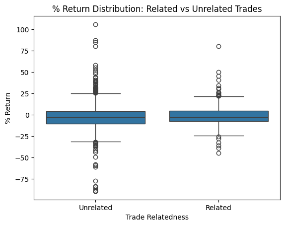
It appears like Q1-Q3 are relatively similar for unrelated and related trades. The main difference seems to be that trades which are unrelated to a Congressman’s sector exhibit much more variance than trades that are related to a Congressman’s sector.
Let’s analyze this further via a KDE plot of percent return, separated by relatedness.
# Set up the plot
plt.figure(figsize=(10, 6))
# Plot KDE separately to normalize each group
sns.kdeplot(data=filtered_df[filtered_df['trade_related'] == 1], x='pct_return', label='Related', fill=True, common_norm=False)
sns.kdeplot(data=filtered_df[filtered_df['trade_related'] == 0], x='pct_return', label='Unrelated', fill=True, common_norm=False)
plt.title('KDE of Percent Return by Trade Relatedness (Normalized, ≤ 200%)')
plt.xlabel('Percent Return')
plt.ylabel('Density')
plt.legend()
plt.grid(True)
plt.tight_layout()
plt.show()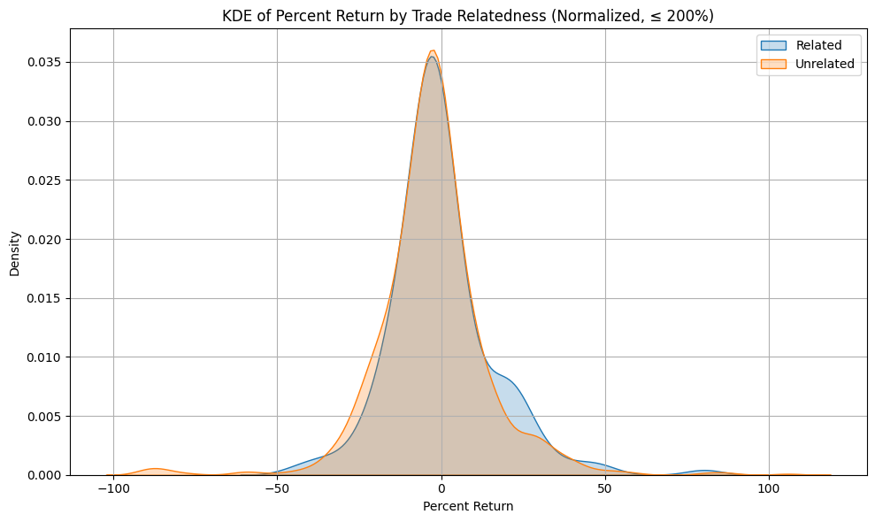
There is a slight bump on the right end of the related graph, and almost zero density at the negative end of the graph. This means that related trades have less variance than unrelated trades, and this slight bump means a proportion of related trades actually perform decnetly well (~25% return on investment). This can explain the lesser variance in related trades, in comparison to unrelated trades, as well as the lower mean percent return of unrelated trades.
Let’s see which 25 politicians performed most extremely well via a bar graph.
# Group by politician, compute average return and % of related trades
grouped = merged.groupby('politician_name').agg(
avg_return=('pct_return', 'mean'),
std_return=('pct_return', 'std'),
count=('pct_return', 'count'),
proportion_related=('trade_related', 'mean')
).reset_index()
# Optional: sort by return or proportion_related
grouped = grouped.sort_values('avg_return', ascending=False).head(25)
# Bar plot with error bars (std / sqrt(n))
plt.figure(figsize=(14, 6))
sns.barplot(
data=grouped,
x='politician_name',
y='avg_return',
hue='proportion_related',
dodge=False,
palette='coolwarm',
errorbar=('ci', 95)
)
plt.xticks(rotation=90)
plt.title('Average Return by Politician (Top 25)')
plt.ylabel('Average % Return')
plt.xlabel('Politician')
plt.legend(title='% Trades Related')
plt.tight_layout()
plt.show()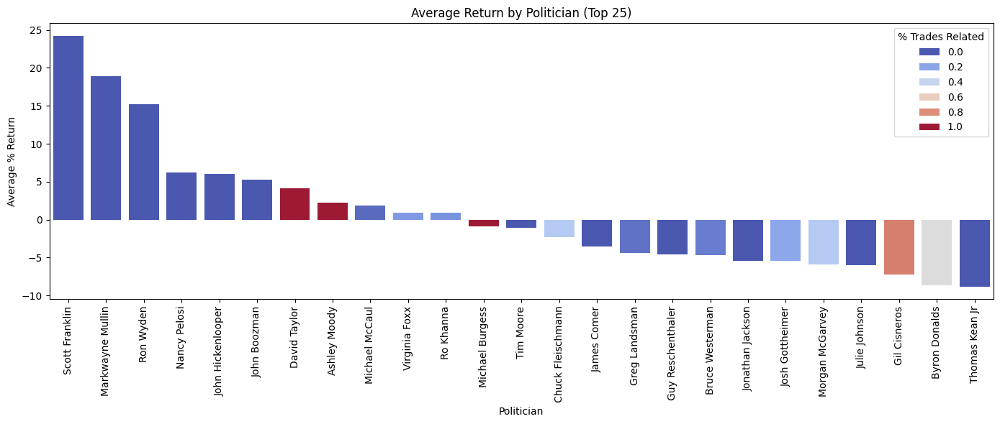
As expected, the redder values, which are politicians who mostly made trades related to their sector, do not appear very often, therefore exhibiting less extremity and less variance. Most of the most extreme values are from politicians making trades unrelated to their sector.
Now, let’s see a chart of the 25 worst performing politicians.
# Group by politician, compute average return and % of related trades
grouped = merged.groupby('politician_name').agg(
avg_return=('pct_return', 'mean'),
std_return=('pct_return', 'std'),
count=('pct_return', 'count'),
proportion_related=('trade_related', 'mean')
).reset_index()
# Select bottom 25 politicians by average return
bottom_25 = grouped.nsmallest(25, 'avg_return')
# Bar plot with error bars (std / sqrt(n))
plt.figure(figsize=(14, 6))
sns.barplot(
data=bottom_25,
x='politician_name',
y='avg_return',
hue='proportion_related',
dodge=False,
palette='coolwarm',
errorbar=('ci', 95) # or use errorbar=('se',) if seaborn version < 0.12
)
plt.xticks(rotation=90)
plt.title('Average Return by Politician (Bottom 25)')
plt.ylabel('Average % Return')
plt.xlabel('Politician')
plt.legend(title='% Trades Related')
plt.tight_layout()
plt.show()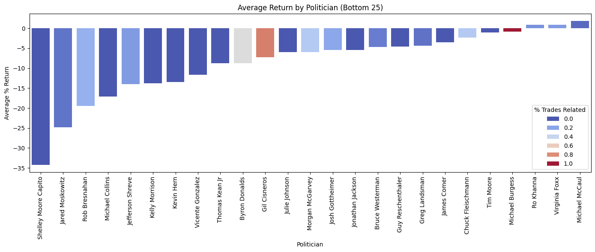
Likewise, the worst performing politicians generally have bluer bars, meaning they make trades unrelated to their sector. Red bars appear fairly rarely, so, taken with the prior graph, the politicians that performed most poorly and most excellently tend to be trading in unrelated sectors. We get a sense that trading in unrelated sectors leads to a higher variance in outcomes than related sectors.
Now, let’s see a breakdown by sector, which sector has the best returns, and is this correlated to whether or not the politician is associated with that sector?
# Group by stock_sector and trade_related
sector_grouped = merged.groupby(['stock_sector', 'trade_related']).agg(
avg_return=('pct_return', 'mean'),
std_return=('pct_return', 'std'),
count=('pct_return', 'count')
).reset_index()
# Sort sectors by average return when trade_related == 1 (if you want that order)
related_order = (
sector_grouped[sector_grouped['trade_related'] == 1]
.sort_values('avg_return', ascending=False)['stock_sector']
)
# Plot
plt.figure(figsize=(14, 7))
sns.barplot(
data=sector_grouped,
x='stock_sector',
y='avg_return',
hue='trade_related',
order=related_order,
palette='Set2'
)
plt.xticks(rotation=45, ha='right')
plt.xlabel('Stock Sector')
plt.ylabel('Average % Return')
plt.title('Average Return by Sector (Related vs. Unrelated Trades)')
plt.legend(title='Trade Related')
plt.tight_layout()
plt.show()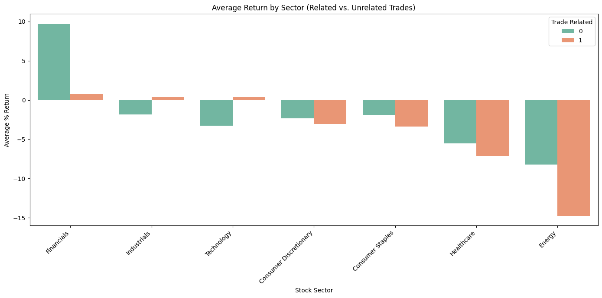
It appears as if, for industrials and technology, related trades outperform unrelated trades. However, in general, related trades do not outperform unrelated trades. However, we see that certain sectors, namely financials, technology, and industrials, far outperform other sectors like healthcare and energy. We should explore sector type as a potential confounding variable.
Let’s see if days the stock is held is a confounding variable.
sns.lmplot(
data=filtered_df,
x='days_held',
y='pct_return',
hue='trade_related',
scatter_kws={'s': 40, 'alpha': 0.5},
line_kws={'linewidth': 2},
height=6,
aspect=2,
palette='Set1',
markers=['o', 's'] # Optional: different markers for related/unrelated
)
plt.title("Days Held vs. Percent Return with Regression Lines")
plt.xlabel("Days Held")
plt.ylabel("Percent Return")
plt.tight_layout()
plt.show()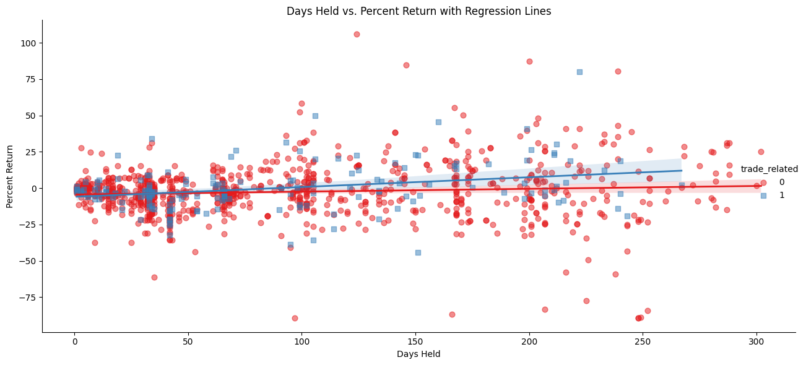
There appears to be an incredibly slight correlation, it is probably not a confounding variable.
Now, let’s see how bigger trades vary on percent returns.
size_buy_avg_map = {
'1K–15K': 8000,
'15K–50K': 32500,
'50K–100K': 75000,
'100K–250K': 175000,
'250K–500K': 375000,
'500K–1M': 750000,
'1M–5M': 3000000,
'5M–25M': 15000000,
'25M–50M': 37500000
}
# Copy the df and map average sizes
plot_df = filtered_df.copy()
plot_df['log_size_buy'] = (
plot_df['size_buy']
.map(size_buy_avg_map)
.apply(lambda x: np.log10(x) if pd.notnull(x) else np.nan)
)
# Preserve the original size_buy labels for the hue
plot_df['size_buy_label'] = plot_df['size_buy']
plt.figure(figsize=(12, 6))
sns.boxplot(
data=plot_df,
x='trade_related',
y='pct_return',
hue='size_buy_label', # Use original labels for legend
palette='coolwarm',
dodge=True
)
plt.title("Percent Return by Trade Size and Trade Relatedness")
plt.xlabel("Trade Relatedness")
plt.xticks([0, 1], ['Unrelated', 'Related'])
plt.ylabel("Percent Return")
plt.legend(title="Size Buy Range", bbox_to_anchor=(1.05, 1), loc='upper left')
plt.tight_layout()
plt.show()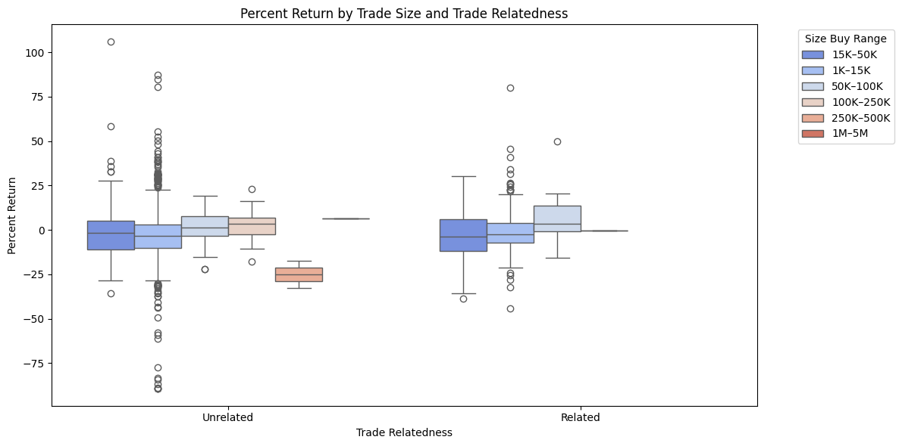
There seems to be very low correlation between size of trade and percent return, so size of trade is also likely not a confounding variable.
Analysis #1: Analysis Dataset Overview
Based on our EDA dataset, we have an idea of what variables have what relations to stock performance. Let’s re-check our distributions, and make sure our analysis dataset does not introduce any anomalous or concerning patterns.
analysis_df = pd.read_excel("FINAL_related_dataset.xlsx")Let’s rename our columns to match the EDA dataset.
analysis_df.rename(columns={"Ticker":"ticker","Name":"politician_name","Traded":"buy_date","Trade_Size_USD":"size_buy","Party":"party","State":"state","excess_return":"pct_return","Sector":"stock_sector","District":"district","Chamber":"chamber","TickerType":"ticker_type"},inplace=True)analysis_df.head()| ticker | ticker_type | buy_date | Transaction | size_buy | politician_name | party | district | chamber | pct_return | state | stock_sector | politician_sectors | trade_related | |
|---|---|---|---|---|---|---|---|---|---|---|---|---|---|---|
| 0 | AXP | ST | 2025-05-05 | Purchase | $1,001 - $15,000 | Marjorie Taylor Greene | R | GA14 | House | 2.203268 | Georgia | Financials | ['Industrials', 'no_sector'] | 0 |
| 1 | GILD | ST | 2025-05-05 | Purchase | $1,001 - $15,000 | Marjorie Taylor Greene | R | GA14 | House | -5.866157 | Georgia | Healthcare | ['Industrials', 'no_sector'] | 0 |
| 2 | CMI | ST | 2025-05-05 | Purchase | $1,001 - $15,000 | Marjorie Taylor Greene | R | GA14 | House | 1.331400 | Georgia | Industrials | ['Industrials', 'no_sector'] | 1 |
| 3 | AMAT | ST | 2025-05-05 | Purchase | $1,001 - $15,000 | Marjorie Taylor Greene | R | GA14 | House | 0.519373 | Georgia | Technology | ['Industrials', 'no_sector'] | 0 |
| 4 | GILD | ST | 2025-05-05 | Purchase | $1,001 - $15,000 | Marjorie Taylor Greene | R | GA14 | House | -5.866157 | Georgia | Healthcare | ['Industrials', 'no_sector'] | 0 |
Our new dataset differs in a few ways from our EDA dataset. Namely, this dataset includes more data about each politician: their chamber (House vs. Senate), their State, their political party, as well as their district. These extra factors can be explored as potential confounders during analysis.
Let’s look at some basic statistics related to this dataset.
analysis_df.describe()| pct_return | trade_related | |
|---|---|---|
| count | 21559.000000 | 21559.000000 |
| mean | -13.234387 | 0.119579 |
| std | 280.096086 | 0.324476 |
| min | -343.822825 | 0.000000 |
| 25% | -101.288458 | 0.000000 |
| 50% | -32.791040 | 0.000000 |
| 75% | 15.617113 | 0.000000 |
| max | 14513.162298 | 1.000000 |
Looks like the average return on trades is -13%, with the lowest loss being -343%, and the highest gain being 14513%. As with the EDA dataset, there are major outliers in trading, and we should definitely filter these out as we go along.
Let’s analyze related vs unrelated trades.
analysis_df['trade_related'].value_counts()trade_related
0 18981
1 2578
Name: count, dtype: int64Our EDA dataset had ~1000 rows, and this dataset has ~20500 rows. The proportion of related trades in our analysis dataset is ~12.0%, while in our EDA dataset it is ~14.6%. So, the general makeup of these datasets is pretty similar.
Let’s look at the sector-by-sector breakdown of this dataset, which sectors have how many stock trades?
analysis_df['stock_sector'].value_counts()stock_sector
Technology 3734
Financials 2700
Healthcare 2682
Consumer Discretionary 2441
Industrials 2276
Energy 1640
Consumer Staples 1565
Communication Services 1344
ETF 1004
Materials 1001
Utilities 625
Real Estate 547
Name: count, dtype: int64Similarly to the EDA dataset, the predominant investments are in technology, finance, and healthcare. In general, the popularity of investment sectors follows that of the EDA sector. So no far, no anomalies.
Let’s look at what sectors our politicians are associated with, just like in the EDA dataset.
cong_sec = pd.read_excel("FINAL_PROJECT_WORK/politicians_with_sectors.xlsx")
try:
cong_sec['sectors'] = cong_sec['sectors'].apply(
lambda x: ast.literal_eval(x) if isinstance(x, str) else x
)
except (ValueError, SyntaxError):
print("Warning: 'sectors' column in cong_sec might not be in a safe list format for all rows. Proceeding without `ast.literal_eval`.")
exploded_df = cong_sec.explode('sectors')
unique_pairs = exploded_df[['politician_name', 'sectors']].drop_duplicates()
sector_counts = unique_pairs['sectors'].value_counts()
print(sector_counts)sectors
no_sector 322
Industrials 138
Financials 132
Energy 65
Agriculture 49
Healthcare 48
Technology 32
Utilities 18
Materials 17
Real Estate 4
Name: count, dtype: int64Likewise in our EDA section, the most common association for Congressmen is with Industrials and Financials.
What does the party breakdown look like?
analysis_df['party'].value_counts()party
R 11617
D 9915
I 27
Name: count, dtype: int64Seems like Independents make up a tiny minority of trades, so we should be wary of drawing conclusions from Independent’s patterns.
Continuing our comparison with the EDA dataset, let’s look at how big the trade sizes are.
analysis_df['size_buy'].value_counts()size_buy
$1,001 - $15,000 16367
$15,001 - $50,000 3357
$50,001 - $100,000 868
$100,001 - $250,000 544
$250,001 - $500,000 126
...
$231.65 1
$781.64 1
$962.57 1
$439.99 1
$6.20 - $15,001 1
Name: count, Length: 160, dtype: int64So our analysis dataset continues to be consistent with the EDA dataset, where the vast majority of trades happen in the $1k-$15k range, and the $15k-$50k range, and the more valuabe trades are rarer.
Now that we’ve established the makeup of the EDA and analysis datasets are largely similar, let’s split our dataset into related and unrelated trades, and see how their distribution statistics compare.
analysis_df_related = analysis_df[analysis_df['trade_related'] == True]
analysis_df_unrelated = analysis_df[analysis_df['trade_related'] == False]analysis_df_related.describe()| pct_return | trade_related | |
|---|---|---|
| count | 2578.000000 | 2578.0 |
| mean | -20.715521 | 1.0 |
| std | 139.112019 | 0.0 |
| min | -307.867559 | 1.0 |
| 25% | -94.133161 | 1.0 |
| 50% | -28.817093 | 1.0 |
| 75% | 22.014429 | 1.0 |
| max | 1982.406845 | 1.0 |
analysis_df_unrelated.describe()| pct_return | trade_related | |
|---|---|---|
| count | 18981.000000 | 18981.0 |
| mean | -12.218299 | 0.0 |
| std | 294.064305 | 0.0 |
| min | -343.822825 | 0.0 |
| 25% | -102.614073 | 0.0 |
| 50% | -33.214651 | 0.0 |
| 75% | 14.763741 | 0.0 |
| max | 14513.162298 | 0.0 |
It appears as if both unrelated and related trades have major outliers, with trades of >14000% percent return. We should filter these out before continuing.
filtered_analysis_df = analysis_df[analysis_df['pct_return'] <= 500]filtered_analysis_df_related = filtered_analysis_df[filtered_analysis_df['trade_related'] == True]
filtered_analysis_df_unrelated = filtered_analysis_df[filtered_analysis_df['trade_related'] == False]filtered_analysis_df_related.describe()| pct_return | trade_related | |
|---|---|---|
| count | 2550.000000 | 2550.0 |
| mean | -29.612980 | 1.0 |
| std | 106.285632 | 0.0 |
| min | -307.867559 | 1.0 |
| 25% | -94.837376 | 1.0 |
| 50% | -30.468559 | 1.0 |
| 75% | 19.811536 | 1.0 |
| max | 485.912282 | 1.0 |
filtered_analysis_df_unrelated.describe()| pct_return | trade_related | |
|---|---|---|
| count | 18614.000000 | 18614.0 |
| mean | -36.026235 | 0.0 |
| std | 109.886157 | 0.0 |
| min | -343.822825 | 0.0 |
| 25% | -103.975181 | 0.0 |
| 50% | -35.429856 | 0.0 |
| 75% | 10.971848 | 0.0 |
| max | 497.085604 | 0.0 |
Once we’ve filtered out outliers, it appears the mean pct_return for unrelated trades is -36%, while for related trades it is only -29%. Likewise to our EDA dataset, related trades perform better than unrelated trades. We should note that despite the data following a similar distribution to EDA, the performance of the stocks is much worse than that of the EDA dataset. This is likely due to the fact that our analysis dataset includes much more historical data, going all the way to the pandemic, which was an era of eocnomic slump for the world economy, while our EDA dataset mostly includes data from 2024-2025, a relatively strong economic year for the U.S.
Data Visualization
Let’s plot our data in the same context and layouts as we did for EDA. Via a box-plot, we can visualize the distribution of our data, see where most of the values lie, and see how extreme certain values are.
sns.boxplot(x='trade_related', y='pct_return', data=filtered_analysis_df)
plt.title('% Return Distribution: Related vs Unrelated Trades')
plt.xlabel('Trade Relatedness')
plt.ylabel('% Return')
plt.xticks([0, 1], ['Unrelated', 'Related'])([<matplotlib.axis.XTick at 0x18519fcfc50>,
<matplotlib.axis.XTick at 0x1851a5b9310>],
[Text(0, 0, 'Unrelated'), Text(1, 0, 'Related')])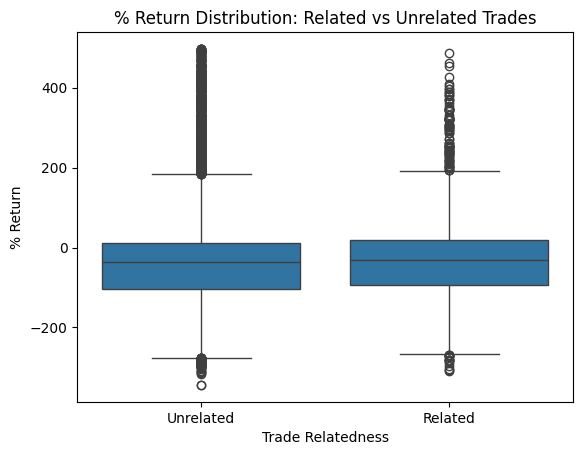
(As shown by the dots extending off the top and bottom of the graph), likewise to our EDA, there are an immense amount of outliers in the unrelated graph compared to the related graph. And, likewise to our EDA, the unrelated and related trade distributions are fairly similar, with the related trade distribution being slightly more clustered and greater than the unrelated trade distribution.
A KDE plot examines how often a value appears in our data, so let’s analyze the KDE of percent return, based on trade relatedness.
# Set up the plot
plt.figure(figsize=(10, 6))
# Plot KDE separately to normalize each group
sns.kdeplot(data=filtered_analysis_df[filtered_analysis_df['trade_related'] == 1], x='pct_return', label='Related', fill=True, common_norm=False, color='red')
sns.kdeplot(data=filtered_analysis_df[filtered_analysis_df['trade_related'] == 0], x='pct_return', label='Unrelated', fill=True, common_norm=False, color='blue')
plt.title('KDE of Percent Return by Trade Relatedness (Normalized, ≤ 200%)')
plt.xlabel('Percent Return')
plt.ylabel('Density')
plt.legend()
plt.grid(True)
plt.tight_layout()
plt.show()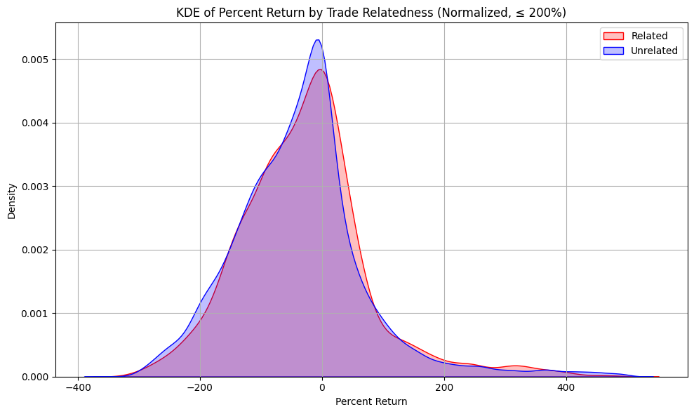
This chart shows that the most common returns of both related and unrelated trades are 0%. The distribution is a little back-heavy, which explains why the average return of all trades is negative. Similarly to our EDA dataset, there is a small hump for related trades in the positive percent return percentages. That means that there is a good proportion of related trades where there is a sizeable, but not insane, positive return on investment.
Let’s see which politicians performed most extremelly well via a bar graph. We’ll use our unfiltered dataframe for this.
# Group by politician, compute average return and % of related trades
grouped = analysis_df.groupby('politician_name').agg(
avg_return=('pct_return', 'mean'),
std_return=('pct_return', 'std'),
count=('pct_return', 'count'),
proportion_related=('trade_related', 'mean')
).reset_index()
# Optional: sort by return or proportion_related
grouped = grouped.sort_values('avg_return', ascending=False).head(25)
# Bar plot with error bars (std / sqrt(n))
plt.figure(figsize=(14, 6))
sns.barplot(
data=grouped,
x='politician_name',
y='avg_return',
hue='proportion_related',
dodge=False,
palette='coolwarm',
errorbar=('ci', 95)
)
plt.xticks(rotation=90)
plt.title('Average Return by Politician (Top 25)')
plt.ylabel('Average % Return')
plt.xlabel('Politician')
plt.legend(title='% Trades Related')
plt.tight_layout()
plt.show()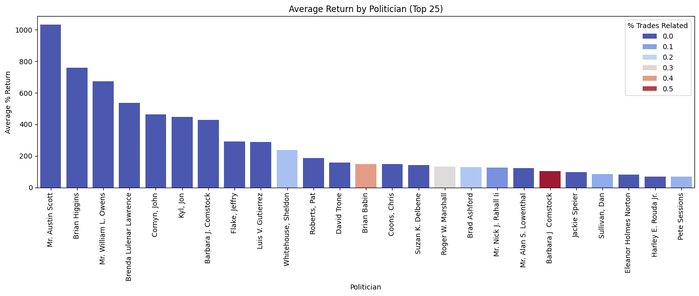
The blue bars are politicians who mostly traded in unrelated sectors, and the redder the bar, the more related trades that politician made. So most of the best-performing politicians were actually in unrelated trades, likely because of hype stocks (stocks that increased in valuation at an extremely high rate, such as NVIDIA). Let’s see which politicians performed the worst.
# Group by politician, compute average return and % of related trades
grouped = analysis_df.groupby('politician_name').agg(
avg_return=('pct_return', 'mean'),
std_return=('pct_return', 'std'),
count=('pct_return', 'count'),
proportion_related=('trade_related', 'mean')
).reset_index()
# Select bottom 25 politicians by average return
bottom_25 = grouped.nsmallest(25, 'avg_return')
# Bar plot with error bars (std / sqrt(n))
plt.figure(figsize=(14, 6))
sns.barplot(
data=bottom_25,
x='politician_name',
y='avg_return',
hue='proportion_related',
dodge=False,
palette='coolwarm',
errorbar=('ci', 95) # or use errorbar=('se',) if seaborn version < 0.12
)
plt.xticks(rotation=90)
plt.title('Average Return by Politician (Bottom 25)')
plt.ylabel('Average % Return')
plt.xlabel('Politician')
plt.legend(title='% Trades Related')
plt.tight_layout()
plt.show()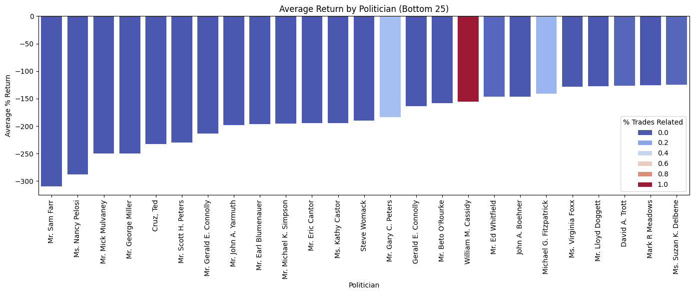
So the worst-performing politicians are also trading in unrelated sectors! This supports our earlier analysis, that the distribution of related trades has a tighter variance than that of unrelated trades.
Now, let’s view a sector-by-sector breakdown. Which sector’s investments have the best returns, and is that correlated to if that politician is associated with that sector?
# Group by stock_sector and trade_related
sector_grouped = filtered_analysis_df.groupby(['stock_sector', 'trade_related']).agg(
avg_return=('pct_return', 'mean'),
std_return=('pct_return', 'std'),
count=('pct_return', 'count')
).reset_index()
# Sort sectors by average return when trade_related == 1 (if you want that order)
related_order = (
sector_grouped[sector_grouped['trade_related'] == 1]
.sort_values('avg_return', ascending=False)['stock_sector']
)
# Plot
plt.figure(figsize=(14, 7))
sns.barplot(
data=sector_grouped,
x='stock_sector',
y='avg_return',
hue='trade_related',
order=related_order,
palette='Set2'
)
plt.xticks(rotation=45, ha='right')
plt.xlabel('Stock Sector')
plt.ylabel('Average % Return')
plt.title('Average Return by Sector (Related vs. Unrelated Trades)')
plt.legend(title='Trade Related')
plt.tight_layout()
plt.show()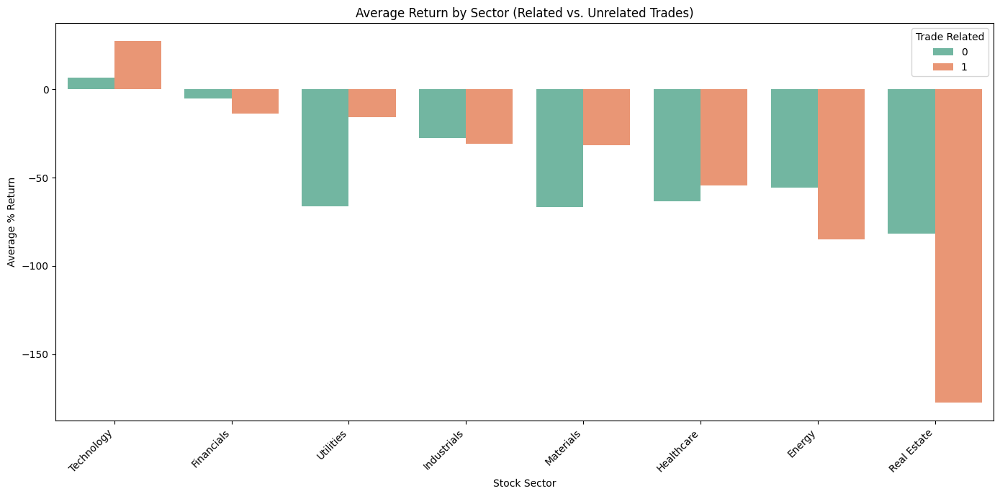
It seems like relatedness to a sector helps Congressmen in tech and utilities, but actually has much worse returns in terms of real-estate and energy. In general though, other than tech, no sector shows a strikingly advantage for investment; even in cases where related trades perform better, the returns are still negative. Since certain sectors like tech perform much better than other sectors like real-estate, we should explore sector type as a potential confounder on return on investment.
Let’s see if return on investment varies depending on how large the trade made was.
size_buy_avg_map = {
'$1,001 - $15,000': 8000,
'$15,001 - $50,000': 32500,
'$50,001 - $100,000': 75000,
'$100,001 - $250,000': 175000,
'$250,001 - $500,000': 375000,
'$500,001 - $1,000,000': 750000,
'$1,000,001 - $5,000,000': 3000000,
'$5,000,001 - $25,000,000': 15000000,
'$25,000,001 - $50,000,000': 37500000
}
buy_map_df = filtered_analysis_df[filtered_analysis_df['size_buy'].isin(size_buy_avg_map.keys())]
# Copy the df and map average sizes
plot_df = buy_map_df.copy()
plot_df['log_size_buy'] = (
plot_df['size_buy']
.map(size_buy_avg_map)
.apply(lambda x: np.log10(x) if pd.notnull(x) else np.nan)
)
# Preserve the original size_buy labels for the hue
plot_df['size_buy_label'] = plot_df['size_buy']
# Create a green-to-yellow color map
green_yellow_cmap = LinearSegmentedColormap.from_list("green_yellow", ["green", "yellow"], N=len(plot_df['size_buy_label'].unique()))
# Create a palette using the unique labels
unique_labels = sorted(plot_df['size_buy_label'].unique(), key=lambda x: size_buy_avg_map[x])
palette = sns.color_palette(green_yellow_cmap(np.linspace(0, 1, len(unique_labels))))
palette_dict = dict(zip(unique_labels, palette))
# Plot using the custom palette
plt.figure(figsize=(12, 6))
sns.boxplot(
data=plot_df,
x='trade_related',
y='pct_return',
hue='size_buy_label',
palette=palette_dict,
dodge=True
)
plt.title("Percent Return by Trade Size and Trade Relatedness")
plt.xlabel("Trade Relatedness")
plt.xticks([0, 1], ['Unrelated', 'Related'])
plt.ylabel("Percent Return")
plt.legend(title="Size Buy Range", bbox_to_anchor=(1.05, 1), loc='upper left')
plt.tight_layout()
plt.show()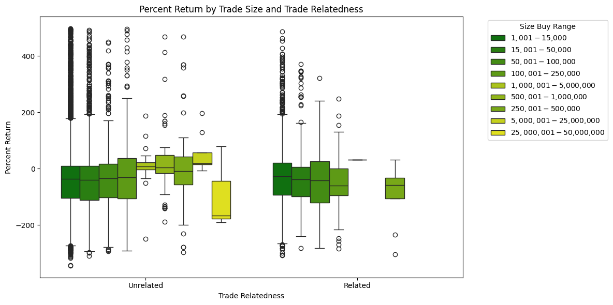
Interestingly, unlike the EDA dataset, in our analysis dataset, there seems to be no correlation between the size of our trade and our return on investment. So size of trade is likely not a confounding variable.
Let’s see if certain political parties perform better on related trades than others.
# Step 1: Group by party and trade_related, then compute average return
grouped = filtered_analysis_df.groupby(['party', 'trade_related']).agg(
avg_return=('pct_return', 'mean'),
std_return=('pct_return', 'std'),
count=('pct_return', 'count')
).reset_index()
# Step 2: Rename 'D' and 'R' to full names
party_map = {'D': 'Democrat', 'R': 'Republican', 'I': 'Independent'}
grouped['party'] = grouped['party'].map(party_map)
# Step 3: Convert trade_related to readable labels
grouped['trade_type'] = grouped['trade_related'].map({0: 'Unrelated', 1: 'Related'})
# Step 4: Plot
plt.figure(figsize=(8, 6))
sns.barplot(
data=grouped,
x='party',
y='avg_return',
hue='trade_type',
palette='Set2',
errorbar=('ci', 95) # Use ci=95 if on older seaborn
)
plt.title('Average % Return by Party and Trade Relation')
plt.xlabel('Party')
plt.ylabel('Average % Return')
plt.legend(title='Trade Relation')
plt.tight_layout()
plt.show()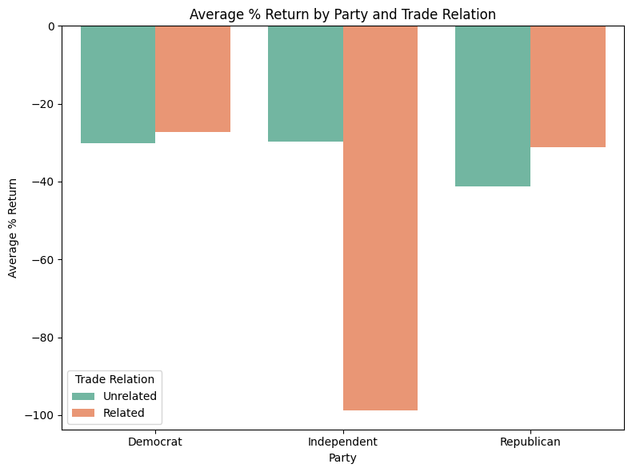
In general, seems like there is slight correlation between party and trading performance. Note that Independents compose 27 of 20,000 trades in our dataset, so they can safely be counted as an outlier. And, similar to our earlier conclusion, there is a slight edge on related trades over unrelated trades, though the return on investment is still mostly negative. So, in our regression models we should analyze differences in party.
Let’s explore if there is a correlation between chamber and performance.
# Step 1: Group by party and trade_related, then compute average return
grouped = filtered_analysis_df.groupby(['chamber', 'trade_related']).agg(
avg_return=('pct_return', 'mean'),
std_return=('pct_return', 'std'),
count=('pct_return', 'count')
).reset_index()
# Step 3: Convert trade_related to readable labels
grouped['trade_type'] = grouped['trade_related'].map({0: 'Unrelated', 1: 'Related'})
# Step 4: Plot
plt.figure(figsize=(8, 6))
sns.barplot(
data=grouped,
x='chamber',
y='avg_return',
hue='trade_type',
palette='Set2',
errorbar=('ci', 95) # Use ci=95 if on older seaborn
)
plt.title('Average % Return by Chamber and Trade Relation')
plt.xlabel('Chamber')
plt.ylabel('Average % Return')
plt.legend(title='Trade Relation')
plt.tight_layout()
plt.show()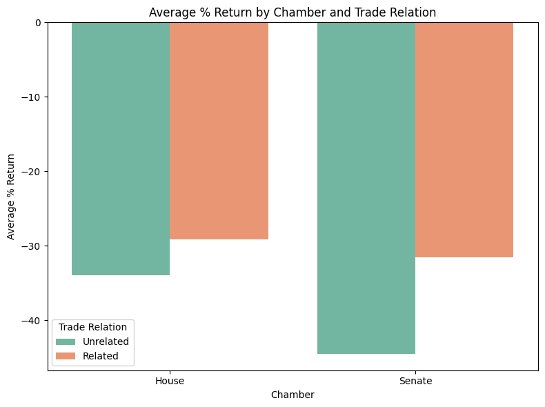
There seems to be a noticeable correlation between chamber and percent return. The House seems to be outperforming the Senate by a notable margin. And, as before, there is a slight correlation between trade relatedness and return. We should also regress on chamber as a potential confounder to see any correlations.
So, we should run regression models on trade relatedness, which seems to have a slight correlation with percent return, as well as chamber, party, and sector.
Data Modeling and Analysis
Now that we have a better understanding of the data set, we will now move from analysis to statistical data model. In this section our main goal is to test our hypothesis: Do American Congressmen in industry or commerce-related committees trading stocks related to their sector perform better than when investing in unrelated sectors?
Motivation behind using an OLS Regression Model
We chose to use an Ordinary Least Squares (OLS) regression model for a couple reasons:
Interpretability: OLS is an easily interpretable model. It is able to quantify (put a number to) the relationship between each independent variable the dependent variable (
excess_return). With this type of transparency it allows us to analyze the magnitude and direction of the effect each variable on the dependent variable.Hypothesis Testing: OLS is a model that is really well suited for hypothesis testing. It provides p-values for each coefficient and using this it allows us to determine if the observed relationship is stastically significant or if the trades happened just by chance. This is the core question we are trying to answer.
Controlling for Confounders: Our analysis needs to account for other factors that may or may not influence the stocks performance. OLS allows us to include multiple control variables (like the politician’s party, chamber, and the stock’s sector). Hence, we chose this model because we can see the individual effect of each variable on the dependent variable.
While we could choose more “complex” models like Random Forests or Gradient Boosting which it could potentially achieve a higher predictive accuracy, the “black box” nature that is entitled to them makes it difficult to understand the impact (whether it is significant impact or not) of individual variables. Our goal is to explain a relationship rather than just predict stock prices. The transparency and statistical insights OLS provides make it the perfect choice for this question.
Loading in the data
filtered_df = pd.read_excel("./FINAL_outliers_filtered.xlsx")
filtered_df.head(5)| ticker | ticker_type | buy_date | Transaction | size_buy | politician_name | party | district | chamber | pct_return | state | stock_sector | politician_sectors | trade_related | |
|---|---|---|---|---|---|---|---|---|---|---|---|---|---|---|
| 0 | AXP | ST | 2025-05-05 | Purchase | $1,001 - $15,000 | Marjorie Taylor Greene | R | GA14 | House | 2.203268 | Georgia | Financials | ['Industrials', 'no_sector'] | 0 |
| 1 | GILD | ST | 2025-05-05 | Purchase | $1,001 - $15,000 | Marjorie Taylor Greene | R | GA14 | House | -5.866157 | Georgia | Healthcare | ['Industrials', 'no_sector'] | 0 |
| 2 | CMI | ST | 2025-05-05 | Purchase | $1,001 - $15,000 | Marjorie Taylor Greene | R | GA14 | House | 1.331400 | Georgia | Industrials | ['Industrials', 'no_sector'] | 1 |
| 3 | AMAT | ST | 2025-05-05 | Purchase | $1,001 - $15,000 | Marjorie Taylor Greene | R | GA14 | House | 0.519373 | Georgia | Technology | ['Industrials', 'no_sector'] | 0 |
| 4 | GILD | ST | 2025-05-05 | Purchase | $1,001 - $15,000 | Marjorie Taylor Greene | R | GA14 | House | -5.866157 | Georgia | Healthcare | ['Industrials', 'no_sector'] | 0 |
From EDA we already took care of outlying values such as a 14,000 value for excess_return, so now since we know OLS uses numerical variables, we will convert our categorical variables into numerical “dummy variables”.
df_dummies = pd.get_dummies(filtered_df, columns=['party', 'chamber', 'stock_sector'], drop_first=True, dtype=int)Building the model
Defining X and Y variables
We need to define both X and Y variables. For the X variables we need to use df_dummies and the columns that start with ‘party_’, ‘chamber_’, and ‘stock_sector’. We also add a constant intercept becaues in regression courses we are taught to add a constant column as good practice
# define X and Y variables
Y = df_dummies['pct_return']
# Select all our X variables (our main variable and the controls) used Gemini AI on this section because we did not realize that we had this many independent variables
# and we just experimented if our analysis was wrong/could be better
independent_vars = [col for col in df_dummies.columns if col.startswith(('party_', 'chamber_', 'stock_sector_'))]
independent_vars.append('trade_related')
X = df_dummies[independent_vars]
# Add a constant (intercept) to the model, which is a standard practice in regression
X = sm.add_constant(X)Creating and Fitting the Model
model = sm.OLS(Y, X)
results = model.fit()print("\n--- OLS Regression Results ---")
print(results.summary())
--- OLS Regression Results ---
OLS Regression Results
==============================================================================
Dep. Variable: pct_return R-squared: 0.059
Model: OLS Adj. R-squared: 0.058
Method: Least Squares F-statistic: 87.68
Date: Wed, 11 Jun 2025 Prob (F-statistic): 6.47e-263
Time: 20:28:15 Log-Likelihood: -1.2877e+05
No. Observations: 21164 AIC: 2.576e+05
Df Residuals: 21148 BIC: 2.577e+05
Df Model: 15
Covariance Type: nonrobust
=======================================================================================================
coef std err t P>|t| [0.025 0.975]
-------------------------------------------------------------------------------------------------------
const -41.8498 3.030 -13.813 0.000 -47.788 -35.911
party_I 0.5037 20.529 0.025 0.980 -39.735 40.742
party_R -5.2261 1.539 -3.395 0.001 -8.244 -2.209
chamber_Senate -7.0244 1.888 -3.721 0.000 -10.724 -3.325
stock_sector_Consumer Discretionary 9.3775 3.649 2.570 0.010 2.224 16.531
stock_sector_Consumer Staples -1.9837 3.981 -0.498 0.618 -9.787 5.819
stock_sector_ETF -3.8020 4.473 -0.850 0.395 -12.570 4.966
stock_sector_Energy -11.5269 3.983 -2.894 0.004 -19.334 -3.720
stock_sector_Financials 37.9430 3.683 10.301 0.000 30.723 45.163
stock_sector_Healthcare -16.5699 3.598 -4.606 0.000 -23.621 -9.518
stock_sector_Industrials 17.6446 3.790 4.656 0.000 10.216 25.073
stock_sector_Materials -15.0868 4.476 -3.371 0.001 -23.859 -6.314
stock_sector_Real Estate -38.9762 5.413 -7.200 0.000 -49.587 -28.366
stock_sector_Technology 52.9940 3.443 15.391 0.000 46.245 59.743
stock_sector_Utilities -18.4726 5.170 -3.573 0.000 -28.607 -8.338
trade_related -0.9238 2.474 -0.373 0.709 -5.773 3.926
==============================================================================
Omnibus: 3889.293 Durbin-Watson: 1.809
Prob(Omnibus): 0.000 Jarque-Bera (JB): 11493.103
Skew: 0.964 Prob(JB): 0.00
Kurtosis: 6.052 Cond. No. 34.6
==============================================================================
Notes:
[1] Standard Errors assume that the covariance matrix of the errors is correctly specified.Ethics & Privacy
Some of our ethical concerns: Could it be slanderous/libelous to imply that specific politicians participate in insider trading? Does a strong correlation even imply insider trading in the first place, or is someone who is on that committee more predisposed to being knowledgeable about the field? (correlation vs causation) How would the accusation of insider trading affect a political candidate? How can we control the framing of our results such that they cannot be co-opted to be used to claim corruption when it does not exist? Probably use web scraping to obtain data - might be against certain site TOS. Privacy: If you are a politician (as a public official), do you have as much a right to privacy as a citizen?
Bias in data: Congress demographically is not an accurate representation of the United States population Some industries may be more “tightly-knit” than others that we may unknowingly include/exclude Research: what industries have the biggest “revolving door” (where lobbyists become politicians and politicians become lobbyists) Are there timeline changes that might skew our data? (STOCK Act, depends on the administration/Current attorney general & willingness of persecution) Missing data? Are we doing this for something good or is it for personal gain? Could potentially be good to point out corruption, if our hypothesis is true.
We will handle our ethical concerns as follows:
Regarding all the concerns mentioned above, post-analysis, it should be made clear regardless of the findings that this research project should not be a guideline as to whether you should or should not follow the stock market actions of politicians… as we are not financial professionals. Furthermore, our limitations (new and old) should be made clear to readers at the beginning and end of our project to indicate where shortcomings in our data analysis could stem from. We will make it intentionally and specifically clear the aim of our project is not to determine if insider trading is occurring as a whole or at an individual level as we do not want to slander anyone. Especially considering this is purely observational data, meaning we can only infer correlation (if any) and not causation between politicians, their commitee/sector, and trading.
In terms of biases, privacy, and terms of use issues, Congresspeople are generally mandated to include investments in their financial self-reports, and are not subject to the same expectations of privacy that private citizens are. However, individual sites that we take data from may object to the use of data in a study like this, and it may be against their terms of use to scrape data from their site.
In terms of biases in our dataset, if we are not careful about making sure our committees monitored are representative of Congress, some committees and industries may have more of a “revolving door” effect than others depending on how powerful and funded the related lobbying firms and special interests are. We already know that the Senate has a more powerful “revolving door” than the House does, so we must also balance the amount of Senate and House data such that the results are not skewed in a particular direction, leading us to over- or under-estimate the amount of correlation there is.
We will detect biases as follows. We should have a test dataset to perform EDA on and gain an intuition about how connections in the data normally look. Then, we should analyze the similarities and differences in our test dataset and study dataset, and compare how our hypotheses differ according to these similarities and differences. Therefore, we can determine if one, or both of our datasets are skewed in some manner, as two incredibly similar datasets may indicate both are skewed, and two very different datasets may indicate one is skewed.
In terms of data privacy and equitable impact, the main concern is of our results being co-opted for libelous means. Congresspeople are public officials and are required by law to publicly self-report their financial information, so there is not as much of a concern about data privacy. And most congresspeople are difficult to describe as “disadvantaged,” so the ability of causing equitable impact is minimized.
We will handle isuses by checking terms of service and talk with the TAs about how to collect this data in an ethical way, and whether scraping will be permitted for this project. Also, we will make sure to collect a variety of datasets, and compare the dataset against itself and against other samples in order to determine how to construct the most representative sample.
Discussion and Conclusion
Results
Although in both datasets, we saw that there was a slight better performance on related trades than unrelated trades, based on our regression model there seems to be no strong evidence that a trade being related to a Congressman’s sector leads to a statistically significantly better performance. We see as trade_related has a P>|t| value of 0.709, which is statistically insignificant.
Interestingly, there are several other variables that, with statistical significance, have correlation to good stock performance. One of these is party; if we exclude the Independent party, as it is representative of >0.1% of our dataset, we see that the Republicans, with a statistically significant P>|t| of 0.001, will perform worse than Democrats by a coefficient of ~5%. This is a connection that should be explored in further studies.
Likewise, in a chamber breakdown, the Senate statistically significantly (with P>|t| = 0.001) performs worse than the House by a coefficient of ~7%! This is surprising, as individual senators are often thought to be more powerful than individual members of the House, as there are 2 senators per state, but dozens of representatives per state. This also should be explored in a further study.
Lastly, there appears to be a large correlation between the sector of the trade and the return on investment. For tech, with P>|t| = 0.000, there is a 52% coefficient of greater return on investment. For finance, with P>|t| = 0.000, we have a 37% coefficient on return on investment. And for industrials, with P>|t| of 0.000, we have a 18% coefficient of greater return on investment. However, this link may not necessarily say much other than the state of the market - the United States is the world’s second largest manufacturer, the United States owns tech hubs like Silicon Valley, and the New York Stock Exchange and the NASDAQ are world’s two largest stock exchanges.
In conclusion, although our data showed a slight correlation between trade relatedness and return on investment, it was not statistically significant. Rather, different factors such as Party, Chamber, and Sector showed a much greater correlation on return on investment, and further studies should explore how these links between performance and these factors are formed.
Team Contributions
Speficy who did what. This should be pretty granular, perhaps bullet points, no more than a few sentences per person.
- Tyler Hoang: Data gathering, data cleaning, EDA, data analysis
- Tanner Berman: Data gathering, data cleaning, EDA, final presentation
- Thanh Hoang: Data gathering, data cleaning, final presentation
- Manjot Samra: Hypothesis, data analysis, regression
- David Hornback: Hypothesis, data gathering, data cleaning, final presentation